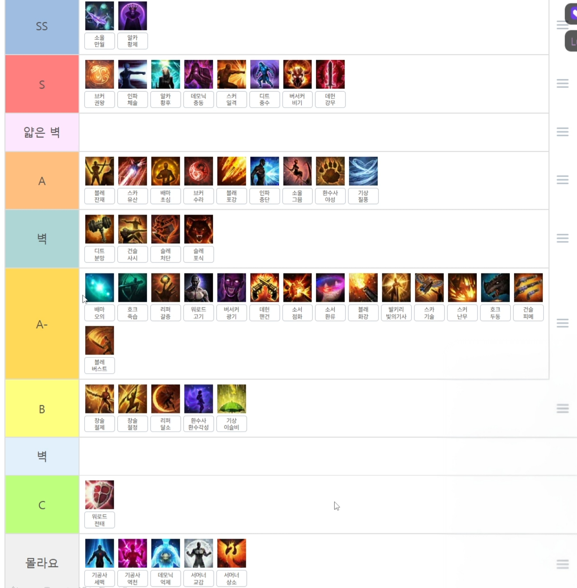

Source image

Click for full-resolution (1608×1638). The translated tier breakdown is below.
Tier breakdown (translated)
| SS | Souleater Full Moon Harvester 소올 만월 Arcanist Order of the Emperor 알카 황제 |
| S | Breaker Brawl King Storm 브커 권왕 Scrapper Ultimate Skill: Taijutsu 인파 체술 Arcanist Grace of the Empress 알카 황후 Shadowhunter Demonic Impulse 데모닉 충동 Striker Deathblow 스커 일격 Destroyer Gravity Training 디트 중수 Berserker Berserker Technique 버서커 비기 Deadeye Tactical Bullet 데헌 강무 |
| — thin wall (얇은 벽) — | |
| A | Deathblade Remaining Energy 블레 잔재 Machinist Evolutionary Legacy 스카 유산 Wardancer First Intention 배마 초심 Breaker Asura's Path 브커 수라 Artillerist Barrage Enhancement 블래 포갑 Scrapper Shock Training 인파 충단 Souleater Night's Edge 소울 그믐 Wildsoul Ferality 환수사 야성 Aeromancer Wind Fury 기상 질풍 |
| — wall (벽) · gate keepers — | |
| gate | Destroyer Rage Hammer 디트 분망 Gunslinger Time to Hunt 건슬 사시 Slayer Punisher 슬레 처단 Slayer Predator 슬레 포식 |
| A− | Wardancer Esoteric Skill Enhancement 배마 오의 Sharpshooter Death Strike 호크 죽습 Reaper Hunger 리퍼 갈증 Gunlancer Lone Knight 워로드 고기 Berserker Mayhem 버서커 광기 Deadeye Pistoleer 데헌 핸건 Sorceress Igniter 소서 점화 Sorceress Reflux 소서 환류 Artillerist Firepower Enhancement 블래 화강 Valkyrie Shining Knight 발키리 빛의기사 Machinist Arthetinean Skill 스카 기술 Striker Esoteric Flurry 스커 난무 Sharpshooter Loyal Companion 호크 두둥 Gunslinger Peacemaker 건슬 피메 Deathblade Burst 블레 버스트 |
| B | Glaivier Control 창술 절제 Glaivier Pinnacle 창술 절정 Reaper Lunar Voice 리퍼 달소 Wildsoul Phantom Beast Awakening 환수사 환수각성 Aeromancer Drizzle 기상 이슬비 |
| — wall (벽) — | |
| C | Gunlancer Combat Readiness 워로드 전태 |
| don’t know | Soulfist Robust Spirit 기공사 세맥 Soulfist Energy Overflow 기공사 역천 Shadowhunter Perfect Suppression 데모닉 억제 Summoner Communication Overflow 서머너 교감 Summoner Master Summoner 서머너 상소 |
Translation notes
Authorship and credentials
This is a joint tier list. Captain Jack and Powdersnow merged their picks. The credit line carries each streamer's notable world-first / early-clear achievement so KR readers know whose perspective is weighting which classes:
- Captain Jack — Thaemine The First · Kazeros The Second
- Powdersnow — Kazeros The Third
The Inven post itself is by user 마러 (Marer) who reposted the image; the rankings are not Marer's.
What's new vs the May 7 Powdersnow solo list
- A thin wall (얇은 벽) now separates S from A — softer than the gate-keeper "big wall" but the authors flag it as meaningful.
- A "don't know" (몰라요) tier at the bottom, for builds neither author had a confident opinion on: both Soulfist builds, Shadowhunter Perfect Suppression, and both Summoner builds. This is different from the May 7 list, which silently dropped classes it had no opinion on; the joint list is explicit.
- The "joke deathblow" tier from May 7 is gone — Striker Deathblow is now in S on the strength of its raid-clear record, no jokes attached.
Slang resolved this round
- 강무 = Deadeye Tactical Bullet. Carry-over slang from the pre-Ark-Passive engraving "강화된 무기 / Enhanced Weapon" → 강+무. After Ark Passive launched, the build was renamed 전술 탄환 (Tactical Bullet), but the 강무 slang persists in active KR community use as of March 2026. Identical naming-survival pattern to 봉쯔 (Souleater Night's Edge, from the old 봉인의 날 engraving name).
- The slide-vs-source discrepancy on Agam's recap. Agam's slide added a phantom "Guardian Knight (spec)" in S and skipped the entire "don't know" tier. The Inven source image has neither: no Guardian Knight anywhere on the list (both 가나 업화 and 가나 드드 are simply not opined on, same status as Soulfist / Summoner), and the "don't know" tier is explicit.
- Supports excluded entirely. Bard, Paladin, Artist, and Valkyrie Liberator do not appear anywhere on the list — same convention as the May 7 disclaimer "Excluded: DPS-supports and pure supports".
Slang decoder
| KR slang on chip | Class | Build (KR official · EN) |
|---|---|---|
| 알카 황제 | Arcanist | 황제의 칙령 · Order of the Emperor |
| 알카 황후 | Arcanist | 황후의 은총 · Grace of the Empress |
| 소올 만월 / 소울 그믐 | Souleater | 만월의 집행자 / 그믐의 경계 · Full Moon Harvester / Night's Edge |
| 브커 권왕 / 브커 수라 | Breaker | 권왕파천무 / 수라의 길 · Brawl King Storm / Asura's Path |
| 인파 체술 / 인파 충단 | Scrapper | 극의: 체술 / 충격 단련 · Ultimate Skill: Taijutsu / Shock Training |
| 데모닉 충동 / 데모닉 억제 | Shadowhunter | 멈출 수 없는 충동 / 완벽한 억제 · Demonic Impulse / Perfect Suppression |
| 스커 일격 / 스커 난무 | Striker | 일격필살 / 오의난무 · Deathblow / Esoteric Flurry |
| 디트 중수 / 디트 분망 | Destroyer | 중력 수련 / 분노의 망치 · Gravity Training / Rage Hammer |
| 버서커 비기 / 버서커 광기 | Berserker | 광전사의 비기 / 광기 · Berserker Technique / Mayhem |
| 데헌 강무 / 데헌 핸건 | Deadeye | 전술 탄환 / 핸드거너 · Tactical Bullet / Pistoleer.
강무 is carry-over slang from the pre-Ark-Passive engraving 강화된 무기 (Enhanced Weapon) — same Tactical Bullet build as 전탄. Active in KR community as of March 2026. |
| 블레 잔재 / 블레 버스트 | Deathblade | 잔재된 기운 / 버스트 · Remaining Energy / Burst (= "Surge" in EN client) |
| 스카 유산 / 스카 기술 | Machinist | 진화의 유산 / 아르데타인의 기술 · Evolutionary Legacy / Arthetinean Skill |
| 배마 초심 / 배마 오의 | Wardancer | 초심 / 오의 강화 · First Intention / Esoteric Skill Enhancement |
| 블래 포갑 / 블래 화강 | Artillerist | 포격 강화 / 화력 강화 · Barrage Enhancement / Firepower Enhancement |
| 환수사 야성 / 환수사 환수각성 | Wildsoul | 야성 / 환수 각성 · Ferality / Phantom Beast Awakening |
| 기상 질풍 / 기상 이슬비 | Aeromancer | 질풍노도 / 이슬비 · Wind Fury / Drizzle |
| 호크 죽습 / 호크 두둥 | Sharpshooter | 죽음의 습격 / 두 번째 동료 · Death Strike / Loyal Companion |
| 리퍼 갈증 / 리퍼 달소 | Reaper | 갈증 / 달의 소리 · Hunger / Lunar Voice |
| 워로드 고기 / 워로드 전태 | Gunlancer | 고독한 기사 / 전투 태세 · Lone Knight / Combat Readiness |
| 건슬 사시 / 건슬 피메 | Gunslinger | 사냥의 시간 / 피스메이커 · Time to Hunt / Peacemaker |
| 슬레 처단 / 슬레 포식 | Slayer | 처단자 / 포식자 · Punisher / Predator |
| 소서 점화 / 소서 환류 | Sorceress | 점화 / 환류 · Igniter / Reflux |
| 발키리 빛의기사 | Valkyrie | 빛의 기사 · Shining Knight (DPS). Liberator (support) not on this list. |
| 창술 절제 / 창술 절정 | Glaivier | 절제 / 절정 · Control / Pinnacle |
| 기공사 세맥 / 기공사 역천 | Soulfist | 세맥타통 / 역천지체 · Robust Spirit / Energy Overflow |
| 서머너 교감 / 서머너 상소 | Summoner | 넘치는 교감 / 상급 소환사 · Communication Overflow / Master Summoner |
Bilingual transcript — class discussion segment
The full Captain Jack & Powdersnow tier-list construction discussion (stream time
2:00:00 – 3:15:00,
wall-clock ~21:00 – 22:15 KST on 2026-05-22). Korean transcribed with
faster-whisper large-v3 on the local 5090; English translated with Ollama
qwen3:8b grounded in the canonical KR slang reference. Click any timestamp to open
that exact moment in the Chzzk VOD. Speaker identification (Captain Jack vs Powdersnow)
is not yet attached — that would require a pyannote diarization pass on top
of this; flagging as a follow-up.
| Stream time | Korean (원문) | English |
|---|---|---|
| 2:00:00 | 3개로 나눠져있어요 3개로 나눠져있다 그래서 여기 S A B C D 잖아요 | It's divided into three parts. It's divided into three parts, so here's S A B C D yeah |
| 2:00:06 | 여기서 어디만 쓸 건가요? S S 한 번 떼고 | Where are we going to use this? S S take one off |
| 2:00:12 | 하나 더 만들어야 돼 S 위에 S 위에 하나 더 만들어야 돼? | Need to make one more S on top of S need to make one more? |
| 2:00:15 | S S 하나 더 만들죠 난 못만들어 만들 수 있을 것 같아요 | S S make one more I can't make it I think I can make it |
| 2:00:21 | S S? 네 S S 까지만 아 오케이 오케이 S S | S S? Yeah S S only up to S okay okay S S |
| 2:00:25 | 얘를 아마 위로 올리면 될거에요 | I think moving this up would work |
| 2:00:28 | 요걸로 | With this |
| 2:00:30 | 이렇게 있으면 | If it's like this |
| 2:00:31 | S 아래에 하나 하고 | Make one below S |
| 2:00:34 | 하나 더요? | One more? |
| 2:00:36 | 그리고 A 아래에 하나 해야 돼요 | And need to make one below A |
| 2:00:38 | 아니 그냥 뭐 | No just whatever |
| 2:00:39 | 그것도 뭐 ABCD로 볼 수 있는거 아니에요? | Isn't that something you can look at as ABCD? |
| 2:00:42 | 그걸 이제 | Now with this |
| 2:00:42 | 그러니까 리그가 이렇게 나눠져있다는거지 | So the league is divided like this |
| 2:00:44 | 나눌 필요는 없고 | No need to divide |
| 2:00:46 | 여기서 리그가 세개로 나눠져있어요 | The league is divided into three here |
| 2:00:48 | A 마이너스 하나 있고 | There's one less A |
| 2:00:50 | 약간 그런 | Slightly like that |
| 2:00:50 | 그러면 그냥 얘를 | Then just use this |
| 2:00:54 | A 마이너스로 수정하면 되잖아요 | Just change it to A minus |
| 2:00:56 | B해도 돼 | B is okay too |
| 2:00:57 | 어차피 그게 B니까 | After all, that's B |
| 2:00:59 | 똑같아요 | It's the same |
| 2:01:00 | 근데 그 얘기신 거죠? | But are you talking about that? |
| 2:01:03 | A랑 A-는 큰 차이가 안난다? | Is there a big difference between A and A-? |
| 2:01:06 | 네 큰 차이가 안나요 | Yeah there's no big difference |
| 2:01:07 | 큰 차이가 안난다 | There's no big difference |
| 2:01:08 | 자 그러면 일단 A-로 두고 | So then let's just put it as A- for now |
| 2:01:11 | 뭐 이걸 B랑 C로 바꾸지 뭐 | What if we change this to B and C instead? |
| 2:01:13 | 그럼 여기 뭐 하나 더 있어야 된다고요? | Then there needs to be one more here? |
| 2:01:16 | S 아래도? | Also below S? |
| 2:01:17 | 이 정도는 돼요 | This much is okay |
| 2:01:18 | 여기서 그냥 | Just like this here |
| 2:01:19 | 님들이 보실 때 | When you guys look at it |
| 2:01:21 | 여기서 | Here |
| 2:01:22 | 여기 하나 있고요 이렇게 | There's one here like this |
| 2:01:27 | 여기 선이 하나 있고요 여기에 선이 하나 있어요 | There's one line here and there's one line here |
| 2:01:30 | 이거 이렇게 1부 2부 3부에요 | This is part 1, part 2, part 3 |
| 2:01:32 | 그러니까 A-부터 C까지가 3부 | So from A- to C is part 3 |
| 2:01:36 | 일단은 완전 기본인데 | It's just the basic for now |
| 2:01:43 | 게임이라면 이래야 되거든요 | That's how it should be for a game |
| 2:01:45 | 전태는 무조건 제일 아래 기본 베이스로 가야 돼요 | Combat Readiness has to be the very bottom base |
| 2:01:47 | 전태는 제일 아래에 맞는데 | Combat Readiness is definitely at the very bottom |
| 2:01:49 | 선회도로 보면 맨 위인데 | Looking at the rotation, it's at the very top |
| 2:01:51 | 그건 이제 그거니까 | That's just how it is |
| 2:01:53 | 순수 딜량이니까 | Because it's pure damage output |
| 2:01:54 | 저는 이게 티어플을 봤을 때 | Based on what I've seen in the tier list |
| 2:01:57 | 허수배율이 높아서 그게 아니라 | Because the multiplier is high, it's not that |
| 2:02:00 | 실전 딜 그리고 이제 | Real combat damage and now |
| 2:02:02 | 그걸 하는 사람들의 | The average skill level of the people doing that |
| 2:02:04 | 평균 승련도 | Considering the multiplier as well |
| 2:02:05 | 그거 허수배율까지 생각해서 | That's how it's done |
| 2:02:08 | 이렇게 하는 겁니다 | Okay okay |
| 2:02:09 | 오케이 오케이 | So let's start off with |
| 2:02:12 | 자 그러면 일단 | This is the base Combat Readiness at 100% |
| 2:02:14 | 이건 기본 베이스 전태가 100% | It's laid as the number 1 |
| 2:02:16 | 얘가 숫자 1인 걸로 기본을 | And we're building from there |
| 2:02:18 | 깔고 가고요 | Anyone weaker than this isn't a real player |
| 2:02:18 | 얘보다 약하면 사람이 아니야 | Even if they're the same, they're not the same class |
| 2:02:21 | 똑같이 있어도 직업이 아니야 | There's no class that's the same as this |
| 2:02:23 | 얘랑 똑같이 있는 직업은 | It's just not that |
| 2:02:25 | 그냥 아니긴 하지 | It just doesn't make sense |
| 2:02:26 | 그냥 말이 안 돼 | Of course |
| 2:02:29 | 당연하죠 | Because if it's weaker than someone with synergy |
| 2:02:31 | 왜냐면 시너지가 두 개인 애보다 | It just doesn't make sense |
| 2:02:33 | 약하면 말이 안 되지 | Right, because it's giving over 10% more damage alone |
| 2:02:35 | 맞잖아요 남들의 딜을 | Right, right |
| 2:02:37 | 얘는 혼자서 10% 넘게 세게 해주는데 | If someone with only one synergy is weaker than this |
| 2:02:39 | 맞죠 맞죠 | Then their value and existence |
| 2:02:40 | 시너지 하나만 있는 애들이 쟤보다 약하면 | Just doesn't exist |
| 2:02:43 | 기운 가치 그러니까 존재 가치가 | Their value and existence don't exist |
| 2:02:45 | 없잖아 | It's just not there right now |
| 2:02:46 | 존재 가치가 없다 | So then |
| 2:02:49 | 지금은 그건 없긴 해요 | Dear viewers |
| 2:02:50 | 자 그러면 | Should we start from the top or the bottom? |
| 2:02:53 | 시청자 여러분 | Should we start with this or that? |
| 2:02:56 | 위에서부터 갈까요? 아래서부터 갈까요? | What? |
| 2:02:58 | 저거부터 저거로 할까요? | (translation missing) |
| 2:03:01 | 뭐요? | (translation missing) |
| 2:03:01 | 아래 보면 하나씩 있는데 하나씩 올릴까요? | Let me go through them one by one, one by one |
| 2:03:04 | 아 그냥 여기서부터 올리자 | Oh, just start from here then |
| 2:03:06 | 있는 거 하나씩 올릴까요? | Shall we go through them one by one? |
| 2:03:07 | 아 좋아요 그럼 자 북허 권항이 있습니다 | Oh, okay then, let's start with North Huree's Gwonhang |
| 2:03:10 | 권항은 S에 있어요 | Gwonhang is in S |
| 2:03:12 | S 맨 위 | Top of S |
| 2:03:14 | S 중에 맨 위 | Top among S |
| 2:03:15 | 그럼 이거 앞쪽을 맨 위라고 생각할게요 | So I'll consider this one as top |
| 2:03:18 | 앞쪽을 | Front |
| 2:03:19 | 어 잠깐만 근데 북허 권항보다 | Wait a minute, but compared to North Huree's Gwonhang |
| 2:03:22 | 위에가 있다고? | Is there something above? |
| 2:03:22 | S 맨 | Top of S |
| 2:03:23 | 아 알겠습니다 | Oh, I see |
| 2:03:24 | 부커는 에스베니 | Buker is in Esbeni |
| 2:03:26 | 뭐 코멘트는 따로 있나요? | Any comments on that? |
| 2:03:28 | 브레이커가 저는 추천하는 | Breaker is the one I recommend |
| 2:03:31 | 지금 밸런스로 추천하는 직업 중에 하나에요 | It's one of the recommended classes currently due to balance |
| 2:03:34 | 무력도 좋고 | It's good in terms of power |
| 2:03:36 | 나리도 그렇게 어렵지 않고 | It's not that hard to master |
| 2:03:37 | 아덴 구조가 | Aden structure is |
| 2:03:39 | 단순하고 | Simple |
| 2:03:41 | 세면서 | With skill |
| 2:03:42 | 뭐라고 해야 돼 | How should I say |
| 2:03:45 | 서포터의 버프도 잘 받는 | It receives buffs well from supporters |
| 2:03:48 | 거의 완벽한 캐릭터 중에 하나에요 | It's one of the almost perfect characters |
| 2:03:51 | 만능이네요? | It's versatile, right? |
| 2:03:52 | 네 만능 | Yes, versatile |
| 2:03:52 | 어 만능급이다 | It's versatile |
| 2:03:54 | 오케이 | Okay |
| 2:03:55 | 그래서 얘는 지금 현재는 S에 있을만하다 | So it's worth being in S currently |
| 2:03:58 | 아 참고로 지금 패치 기준입니다 | Oh, by the way, this is based on the current patch |
| 2:04:00 | 지금 패치 | Current patch |
| 2:04:01 | 너프를 받았지만 그래요 | It got nerfed, but that's fine |
| 2:04:04 | 너프를 받아도 그정도다 | Even with the nerf, it's that much |
| 2:04:05 | 자 그 다음이 바로 옆에 있는게 부커 | So the next one is right next to Buker |
| 2:04:08 | 수라는 | Su-ra is |
| 2:04:09 | 사실 부커보다 딸리지만 | It's actually worse than Buker |
| 2:04:12 | 권한보다 무조건 딸리긴 한데 | It's definitely worse than Gwonhang |
| 2:04:13 | 순서 체급으로 보면 AN이 있어요 무조건 | In terms of class rank, AN is there for sure |
| 2:04:16 | 체급으로 보면 AN이 있다 | In terms of class rank, AN is there |
| 2:04:18 | 약간 비율도 높고 | The ratio is a bit high |
| 2:04:20 | 그 | Yeah |
| 2:04:20 | 수라겔이 뭉쳐있잖아요 | The Asura's Path is clumped together |
| 2:04:23 | 그래서 조거리 좀 받쳐주고 하면 | So if you support a bit |
| 2:04:25 | 충분히 포탄이 있어요 | You have enough bombs |
| 2:04:28 | 밑에는 절대 아니야 | It's absolutely not good at the bottom |
| 2:04:29 | 밑에급은 절대 아니고 | The bottom tier is absolutely not good |
| 2:04:31 | 얘보다 약해야 돼 | It needs to be weaker than this |
| 2:04:33 | 근데 단점이라고 하면 | But if we talk about the downside |
| 2:04:36 | 수라의 단점은 | The downside of Asura's Path is |
| 2:04:37 | 아무래도 헤드이기도 하고 | It's also a head-on class |
| 2:04:41 | 서포트 리소스 좀 많이 받고 | It needs a lot of support resources |
| 2:04:43 | 블레이드 같은 게 | Classes like Blade |
| 2:04:45 | 좀 있어야 되고 | Need to be a bit strong |
| 2:04:45 | 조거리 좀 많이 타면서 | If you ride a lot of mobility |
| 2:04:48 | 좀 짜증날 수 있다 | It can get annoying |
| 2:04:49 | 갑자기 돌리거나 | If it suddenly changes direction |
| 2:04:52 | 그런거에 취약할 수 있어요 | It can be vulnerable to that |
| 2:04:54 | 갑자기 누가 어그로인데 | If someone suddenly gets aggro |
| 2:04:56 | 반대편으로 가버리고 | It can run to the opposite side |
| 2:04:58 | 최고점을 논할 때 | When talking about the top tier |
| 2:05:00 | 좀 짜증나는 요소가 많아요 | There are a lot of annoying factors |
| 2:05:01 | 물론 존나 편한 캐릭은 맞아요 | Of course, it's a really easy class |
| 2:05:03 | 쟤도 전부 다 경면에다가 | It's all on the light side |
| 2:05:06 | X버튼 누르면 | If you press the X button |
| 2:05:08 | 딸깍 피면이고 | It just dodges |
| 2:05:09 | 수락열이 너무 길기도 하고 박을 때 | The skill chain is too long and when you press the button |
| 2:05:12 | 6초 다 받을려면 | It takes 6 seconds to fully land |
| 2:05:14 | 6초 걸리죠 | It takes 6 seconds |
| 2:05:15 | 물론 뉴비가 하거나 | Of course, if a newbie does it |
| 2:05:17 | 모르는 사람이 했을 때는 | If someone who doesn't know does it |
| 2:05:18 | 되게 좋은 캐릭은 많습니다 | There are a lot of good characters |
| 2:05:20 | 되게 편하고 | It's really easy |
| 2:05:21 | 근데 최고점 기준으로 봤을 때 | But when looking at the top tier standard |
| 2:05:22 | 굉장히 스트레스 요소가 되게 많다 | There are a lot of stress factors |
| 2:05:25 | 최고점의 조건이 꽤 탄다 | The conditions for the top tier are quite strict |
| 2:05:28 | 맞아요 | Yeah |
| 2:05:28 | 그래서 그 조건을 따지면 | So if you follow those conditions |
| 2:05:31 | 얘가 완전 최상위권 라인은 아니다 | It's not completely in the top tier |
| 2:05:35 | 그래도 좋은 캐릭은 맞다 | It's still a good character |
| 2:05:36 | 맞아요 | Yeah |
| 2:05:36 | 자 넘어갈까요? | Let's move on then? |
| 2:05:39 | 야성 | Ferality |
| 2:05:40 | 야성 최근에 패치 받았죠 | Ferality got a patch recently |
| 2:05:42 | 야성은 이제 곰수사 기준이면 | Ferality is now based on Gomsoosu standards |
| 2:05:44 | 제일 위에 거 기준으로 하는 거니까 | It's based on the top one |
| 2:05:46 | 곰소수 하면 A에 아래 정도는 됩니다 | If you go with Gomsoosu then A rank is about this |
| 2:05:50 | A에서 | From A |
| 2:05:51 | A의 아래쪽 뒤쪽 | The lower part of A |
| 2:05:53 | 뒤쪽 정도는 됩니다 | This much is okay |
| 2:05:54 | 그래도 A에 있네요 | It's still in A |
| 2:05:56 | 얘가 진짜 피면 덩어리에요 | This one really tanks when it takes damage |
| 2:05:59 | 하루종일 피면인데 | It's like taking damage all day |
| 2:06:01 | 약간 이런 캐릭터 좀 있거든 | There are some characters like this |
| 2:06:04 | 이런 캐릭터는 저는 별로 안 좋아하거든요 | I don't really like characters like this |
| 2:06:07 | 이런 캐릭터는 | Characters like this |
| 2:06:08 | 내 성향상 | Based on my personality |
| 2:06:09 | 왜요? 너무 초딩 같아서? | Why? It feels too childish? |
| 2:06:11 | 이런 거는 배율이 그렇게 높지 않아요 | These kinds of characters don't have that high multiplier |
| 2:06:13 | 배율은 별로 안 높다 | The multiplier isn't that high |
| 2:06:16 | 그냥 실전이 그대로 나오는 | It's just like real combat |
| 2:06:17 | 아 그러니까 조건을 아무것도 안 탄다는 거네요? | Oh so you mean it doesn't have any conditions? |
| 2:06:21 | 무슨 레이드여도 | No matter what raid |
| 2:06:22 | 사막 일광 같은 거 있잖아 | There's things like Saham Sunlight |
| 2:06:24 | 그런 것도 그냥 다 나오는 | Those things just come out normally |
| 2:06:26 | 한 번에 그냥 존나 쉬워 | It's just way too easy to do once |
| 2:06:28 | 에키드나 하루 종일 돌아다니는 | Ekidna wandering around all day |
| 2:06:30 | 에키드나 상대로도 똑같이 | It's the same against Ekidna too |
| 2:06:32 | 펼 수 있다? | Can you handle it? |
| 2:06:33 | 그래서 이런 캐릭을 저는 안 좋아하지만 | So I don't like these kinds of characters but |
| 2:06:37 | 이게 이런 캐릭을 | This character is for people who like these kinds |
| 2:06:39 | 좋아하는 사람도 분명히 있을 거고 | There are definitely people who like this kind of character |
| 2:06:42 | 있죠 국밥이니까 | There are people who like it because of the national dish |
| 2:06:43 | 엄청 국밥 캐릭이에요 | It's an extremely national dish character |
| 2:06:45 | 지금은 | Right now |
| 2:06:46 | 그래서 국밥 | So national dish |
| 2:06:48 | 그 자체다 | It's the character itself |
| 2:06:50 | 최고점 | Top rank |
| 2:06:52 | 데미지를 뽑을 수 있는건 아니지만 | You can't select damage but |
| 2:06:54 | 언제나 | Always |
| 2:06:56 | 저점이 너무 높게 되어있어서 | The low end is too high |
| 2:06:58 | A라인으로 간다 | Going for A line |
| 2:07:00 | 자 그러면 | So then |
| 2:07:02 | 환수사 있습니다 | There is a Phantom Beast |
| 2:07:03 | 환각은 | Phantom Beast is |
| 2:07:05 | 약간 그런거죠 | A bit like that |
| 2:07:07 | 야성이 있으면서 할 필요가 없는 캐릭터 | A character that doesn't need to have Ferality |
| 2:07:10 | 그런게 많거든요 | There are a lot of those |
| 2:07:12 | 많죠 많죠 많죠 | A lot yeah a lot |
| 2:07:13 | 왜냐면 좀 덮어씌워진거지 | Because it's a bit overlapped |
| 2:07:17 | 장점이 | The advantage is |
| 2:07:17 | 딱 비에요 그냥 | Exactly like Breeze just |
| 2:07:18 | 나쁘지 않지만 | Not bad but |
| 2:07:21 | 야성이 곰수사가 있는 이상 | If Ferality and Gomso has |
| 2:07:23 | 이렇게 좋은데 뭐하러 | This good why even |
| 2:07:25 | 뭐하러해 | Why even do that |
| 2:07:25 | 진짜 여우를 너무 좋아해 | I really like foxes a lot |
| 2:07:29 | 이거 아니 | This isn't it |
| 2:07:30 | 쏘는거 너무 좋아해 | I really like shooting |
| 2:07:32 | 이런거 아니면 | This isn't that kind of thing |
| 2:07:33 | 까마귀 쏘고 이런거 너무 좋아해 아니면 | I really like shooting crows and that kind of thing |
| 2:07:38 | 구조적으로 봤을때 | Structurally speaking |
| 2:07:40 | 로아는 서포터가 | Lost Ark is a game where supporters |
| 2:07:42 | 같이 있는 게임이다 보니까 | Are playing together so |
| 2:07:43 | 조우딜이 좋아야 되고 | You need good AoE damage |
| 2:07:45 | 피해도 | Also damage |
| 2:07:47 | 빨리빨리 털 수 있어야 되고 | You need to clear it fast |
| 2:07:50 | 빨리 털고 산책시야를 길여야 되고 | Clear fast and extend the walkaround vision |
| 2:07:52 | 얘는 야성보다 | This is worse than Ferality |
| 2:07:53 | 산책시야도 덜 없는데 | Also has less walkaround vision |
| 2:07:57 | 계속 박아야 되는 구조잖아요 | It's a class that needs to keep pressing |
| 2:07:58 | 로스가 나름 많은 구조인데 | Lost Ark has a decent amount of structure |
| 2:08:00 | 더 약해 | It's even weaker |
| 2:08:01 | 배율이 더 약해 | The scaling is weaker |
| 2:08:03 | 그러면 지금 상태로도 별로 고를 필요 없죠 | Then there's no need to pick it in this state |
| 2:08:07 | 추천할 필요가 없죠 | There's no need to recommend it |
| 2:08:07 | 자 그러면 다음이 소울히터에요 | So then next is Soulfist |
| 2:08:10 | 소울히터 금음은 이제 | Soulfist's Goldem is now |
| 2:08:12 | 광사부 기준이면 | Based on the Lightbringer standard |
| 2:08:14 | A 중위권 | A mid-tier A |
| 2:08:16 | 중하위권 | Lower tier |
| 2:08:19 | 여기 사이렌 들어간다 | Let's go with Siren |
| 2:08:20 | 얘는 무슨 장점이 있죠? | What's the advantage of this one? |
| 2:08:24 | 광사부가 | Light Scourge |
| 2:08:25 | 제가 이제 | I'm not raising it but soul is more |
| 2:08:26 | 키우진 않지만 소울이 더 없잖아요 | I always |
| 2:08:28 | 제가 항상 | Look at the character's potential and say that |
| 2:08:31 | 캐릭터의 허수를 보고 그러거든요 | A little |
| 2:08:32 | 약간 | A bit |
| 2:08:34 | 좀 | Should I call it the advantage of a Tade Dealer? |
| 2:08:35 | 타데딜러의 장점이라고 해야 되나? | Concise and |
| 2:08:39 | 간결하면서 | A little like Hokai |
| 2:08:40 | 약간 호카이 같은 | A little like that? |
| 2:08:42 | 약간 그런 느낌? | It can deal damage safely |
| 2:08:44 | 계속 얘도 무난하게 데미지 넣을 수 있는 | So |
| 2:08:46 | 그래서 | Of course, there's Full Moon after this |
| 2:08:48 | 물론 이 뒤에 만월이 있긴 한데 | Damn, it's Full Moon again? |
| 2:08:53 | 젠장 또 만월이야? | Did you cover it again? |
| 2:08:54 | 또 덮어 씌워줬어? | Sufficiently a little |
| 2:08:56 | 충분히 약간 | Now, comparing, it's Bunker and Bunker's Brawl King |
| 2:08:57 | 지금은 따지면 불커와 불커의 권왕이 | Asura like this |
| 2:09:00 | 수라 이렇게 있잖아요 | Isn't it similar? |
| 2:09:01 | 비슷한 거 아닌가 | It's okay |
| 2:09:03 | 할만해요 얘도 | It's not trash |
| 2:09:05 | 권왕 있다고 수라가 쓰레기는 아니니까 | So it's not trash |
| 2:09:09 | 그렇죠 쓰레기는 아니죠 | If you like this, you can go with Asura |
| 2:09:10 | 이거 좋아하면 수라 할 수 있죠 | But now |
| 2:09:12 | 근데 이제 | I want to see the peak |
| 2:09:13 | 내가 최고점을 보고 싶다 하면 | It's a trade |
| 2:09:16 | 거래하는 거고 | It's sufficient enough to be an A |
| 2:09:17 | 충분히 A도 센 거예요. | An A is also strong enough |
| 2:09:19 | A도 충분히 세다. | So then, let's move on to Full Moon |
| 2:09:21 | 자 그러면 이제 만월입니다. | This one, I |
| 2:09:23 | 얘는 제가 | Said it's better than gold and silver |
| 2:09:25 | 금은보다 좋다 했잖아요. | I originally |
| 2:09:27 | 제가 일단은 원래 | Did tiering |
| 2:09:28 | 티어플을 했었잖아요. | It was the same as Bunker back then |
| 2:09:30 | 그때는 부커랑 똑같았거든요. | But due to the character's nature |
| 2:09:33 | 근데 캐릭의 특성상 | It gets better over time |
| 2:09:35 | 시간이 지나면 조금 더 좋아진 게 나와요. | (translation missing) |
| 2:09:38 | 그렇죠. 왜냐하면 | Yeah. Because |
| 2:09:38 | 계속 쓰다 보면 숙련도 있다는 게 달라지죠. | As you keep using it, the skill level changes. |
| 2:09:41 | 그래서 내가 그것도 봤거든. | So I've seen that too. |
| 2:09:42 | 얘는 그래서 SS로 가야돼요 | So this one needs to be SS. |
| 2:09:44 | 어? | Huh? |
| 2:09:45 | 이게 좀 말이 안되요 | This is kinda not making sense. |
| 2:09:48 | 말이 안된다? | Is this not making sense? |
| 2:09:49 | 이게 딜이 좀 말이 안되 | This damage is kinda not making sense. |
| 2:09:52 | 아 일단 | Well, first off |
| 2:09:54 | 결국에 | In the end |
| 2:09:55 | 저는 그렇게 생각하거든요 | That's how I think about it. |
| 2:09:57 | 이 게임에서 뭐에 제일 가치가 높은가 하면 | In this game, what's the highest value? |
| 2:10:00 | 결국 어쨌든 딜이 1순위일 수밖에 없긴 해요 | In the end, damage is first priority no matter what. |
| 2:10:02 | 게임 구조상 | Due to the game structure |
| 2:10:04 | 당연히 타대가 | Naturally, the tank is |
| 2:10:06 | 3알보다 | Better than 3 skill. |
| 2:10:07 | 허수 배율이 낮아야 | The skill multiplier should be low. |
| 2:10:09 | 실질적으로 | In reality |
| 2:10:11 | 무조건 사별이 세야 된다는 게 아니라 | It's not that you have to be stronger than the tank. |
| 2:10:13 | 이건 허수잖아요 일단 | This is a skill, so first off |
| 2:10:15 | 허수를 봤을 때는 무조건 | When you look at the skill, you have to be weaker than the tank. |
| 2:10:17 | 사별보다 약해야 되는데 | But there's an extra condition. |
| 2:10:19 | 조건이 하나 더 붙는 거니까 | You also have to look at the structure. |
| 2:10:23 | 구조도 봐야 되지만 | First off, basically |
| 2:10:25 | 일단 기본적으로는 | 4 skill should have a lower multiplier than the tank. |
| 2:10:27 | 4대가 사별보다 허수 배율은 낮아야 돼 | You also have to look at the structure. |
| 2:10:30 | 구조까지 봐야 되지만 | This one is too high, first off. |
| 2:10:31 | 얘는 너무 높아 일단 | Is it too high? It's way too high. |
| 2:10:32 | 너무 높다? 너무 높아요 | 4 skill but it's way too high. |
| 2:10:34 | 4대인데 너무 높아요 | The damage advantage is |
| 2:10:36 | 일단 데미지적인 이점이 | Too big to be in SS. |
| 2:10:41 | 너무 커서 SS에 올라왔다 | This is kinda strong. |
| 2:10:42 | 이게 좀 많이 세요 | When you look at the skill multiplier |
| 2:10:45 | 허수배율로 따졌을 때 | It's over 1.3 almost. |
| 2:10:46 | 1.3 이상 거의 | You can think of it as old tier. |
| 2:10:48 | 옛날 대분급이라고 보면 됩니다 | Oh |
| 2:10:51 | 오 | Okay, right now |
| 2:10:53 | 오케이 지금 | This one also got a patch recently |
| 2:10:56 | 얘도 최근에 패치를 받고 | And it changed a bit, I think. |
| 2:10:59 | 좀 달라진 걸로 아는데 | It's changed a bit, I think. |
| 2:11:00 | 로아가 원래 이래요 근데 | Lost Ark was like this originally, but |
| 2:11:02 | 너무 극단적이에요? | It's too extreme, right? |
| 2:11:04 | 요새 벨페를 하면은 | These days, when you do Belphegor, |
| 2:11:06 | 옛날엔 이렇진 않았는데 | It wasn't like this before |
| 2:11:09 | 요새 하면은 | These days, when you do Belphegor, |
| 2:11:11 | 그냥 당첨된 놈이 | It's just whoever gets lucky |
| 2:11:12 | 갑자기 확 세지고 | Suddenly gets a lot stronger |
| 2:11:14 | 코어 이후로 그렇죠? | It's like that since the Core update, right? |
| 2:11:15 | 아크그리드 이후로 | Since the Ark Grid update, |
| 2:11:16 | 아크그리드 이후로 | Since the Ark Grid update, |
| 2:11:17 | 뭔가 이유가 없어 | There's something missing a reason |
| 2:11:18 | 센 게 이유가 있으면 모르겠는데 | If there's a reason for being strong, I don't mind |
| 2:11:20 | 이유가 없어요 | There's no reason |
| 2:11:20 | 그냥 쉬워도 세고 | It gets strong even if you just rest |
| 2:11:24 | 편해도 세고 | It gets strong even if you're relaxed |
| 2:11:25 | 약간 하는 입장에서 갑자기 | From a slightly weak position, suddenly |
| 2:11:27 | 만월이 원래 전에 | Full Moon was like this before |
| 2:11:29 | 벨페 전에는 | Before Belphegor, |
| 2:11:30 | A- 이랬거든요 | A- It was like this |
| 2:11:32 | 벨페 하기 전에는 | Before Belphegor, |
| 2:11:33 | 갑자기 올라왔잖아 | It suddenly went up, didn't it? |
| 2:11:35 | 이런 거 맞추면 | If you match this, |
| 2:11:35 | 갑자기 우리 호카엘 | Suddenly our Hokael |
| 2:11:36 | 이런 것도 갑자기 올라갈 수 있는 거야 | This can also suddenly go up, you know |
| 2:11:38 | 그러니까 기다려야 되잖아 | So you have to wait, right? |
| 2:11:40 | 벨페를 볼 때마다 | Every time you see Belphegor, |
| 2:11:40 | 그럼 페페가 하루종일 기다려야죠 | Then Pepe has to wait all day, right? |
| 2:11:42 | 그게 좀 그렇잖아요 | That's kind of annoying, isn't it? |
| 2:11:43 | 그게 좀 별로 안좋아 | That's kind of bad |
| 2:11:45 | 너무 기도매타라 | It's too much prayer |
| 2:11:46 | 그래서 난 | So I |
| 2:11:49 | 난 지금 권항하면 재밌지만 | I find fun playing as Brawl King now, but |
| 2:11:51 | 애쓰니까 | It's hard work |
| 2:11:52 | 내가 캐릭 11개 있거든요 | I have 11 characters, you know |
| 2:11:54 | 하면은 좀 그래 | It's like that |
| 2:11:56 | 상대적으로 구린 애들 하면 | If you play against relatively weak characters, |
| 2:11:58 | 왜 이래야 될까 | Why should I do this? |
| 2:12:00 | 알겠습니다 | Okay |
| 2:12:01 | 일단 소울은 굉장히 좋은 티어있다 | First off, Soul is in a very good tier |
| 2:12:04 | 일단 요 얘기 하셨고 | Anyway, that's what you said |
| 2:12:05 | 자 그 다음에 대헌 | So next is Daehun |
| 2:12:07 | 행건이잖아요 지금 이거 | It's Hwanggun, right? This one |
| 2:12:08 | 행건 | Hwanggun |
| 2:12:09 | 아무래도 인원수도 너무 적고 | There's also too few players |
| 2:12:11 | 관심도가 좀 많이 떨어지긴 하죠 | The interest level has dropped a lot |
| 2:12:12 | 해봤어요 저건데 | I tried it |
| 2:12:13 | 해봤는데 얘는 직업이 아니야 | I tried it, but it's not a class |
| 2:12:15 | 직업이 아니야? | It's not a class? |
| 2:12:17 | 얘도 그냥 빈데 | It's just an empty slot |
| 2:12:17 | 얘도 오버로드가 있잖아요 지금 | It also has an Overlord, right now |
| 2:12:21 | 전탄 | Jeontan |
| 2:12:22 | 전탄 오버로드가 있는데 행건을 왜 해야 되냐 | Jeontan has an Overlord, why would you need Hwanggun |
| 2:12:25 | 네 맞아요 | Yeah, that's right |
| 2:12:26 | 모든 걸 해서 딸려요 그냥 | You just get everything for free |
| 2:12:28 | 배율 실전성 | Ratio and practicality |
| 2:12:30 | 티면 카운터 | Ties counter |
| 2:12:33 | 그냥 다 딸려요 그냥 | You just get everything for free |
| 2:12:35 | 얘도 결국에 다른 집 가게 | It's ultimately just another shop |
| 2:12:37 | 바로 옆에 있는 | Right next to it |
| 2:12:40 | 직각의 장점에 | The advantage of a right angle |
| 2:12:41 | 잡아먹혔다 | It got eaten up |
| 2:12:42 | 얘 그래도 | It's still |
| 2:12:46 | A-까지는 돼요 | It can get to A- |
| 2:12:48 | 제 생각에는 | In my opinion |
| 2:12:49 | 상향이 좀 되긴 했거든요 | It did get some buffs |
| 2:12:51 | 상향은 생각보다 많이 돼서 | The buffs are more than expected |
| 2:12:53 | 그래도 데미지는 그렇게 나쁘지 않다 | The damage is still not that bad |
| 2:12:59 | 근데 그냥 어차피 | But in the end, it's just |
| 2:13:00 | 어차피 오버로드 대원이 있는 이상 | It's just, with an Overlord already |
| 2:13:03 | A-든 B든 | Whether it's A- or B- |
| 2:13:04 | 무슨 중요하냐 | What's the point |
| 2:13:05 | 이 얘기인 거잖아요 | This is what we're talking about |
| 2:13:06 | 네 맞아요 | Yeah, that's right |
| 2:13:07 | 자 발키 빛의 기사 | Let's talk about Valkyrie, Shining Knight |
| 2:13:11 | 얘는 제가 잘 모르거든요 | I don't know much about it |
| 2:13:12 | 왜냐면 딜 서포트잖아요 | Because it's a damage support |
| 2:13:13 | 지금 딜 서포트 중에 제일 좋은 거는 | The best damage support right now is |
| 2:13:17 | 심판자거든요 | The Judge |
| 2:13:18 | 저도 홀라라고 생각하고 | I also think it's Holala |
| 2:13:20 | 홀라 심판자인데 얘는 내가 봤을 때 | Holala Judge, but in my opinion |
| 2:13:22 | 물론 잘 모르지만 | Of course I don't know much |
| 2:13:25 | 제 생각엔 보통 다 그래요 | In my opinion, it's usually like that |
| 2:13:26 | 보통 거의 다 A-에 있어요 | Usually most are in A- |
| 2:13:29 | 보통 | Usually |
| 2:13:30 | 얘는 | This one |
| 2:13:32 | 근데 저는 살짝 삐해주고 싶은 게 | But I want to give it a slight edge |
| 2:13:36 | 저도 그냥 얘 아주 잠깐이나마 | I just want to give it a little bit |
| 2:13:38 | 딜발키리 잠깐 찍었거든요 | I tried a bit of Devil Valkyrie |
| 2:13:40 | 아주 잠깐이나마 | Just a little bit |
| 2:13:41 | 근데 좀 심심하더라고 | But it felt a bit boring |
| 2:13:43 | A-B 근데 | A-B but |
| 2:13:44 | 걔 더 좆밥 | He's just average |
| 2:13:46 | 걔 그냥 좆밥이에요 | He's just average |
| 2:13:48 | 의계가 있는데 | There's a tier gap |
| 2:13:51 | 그냥 B보단 좀 더 세다 정도인거지 | It's just a bit stronger than B |
| 2:13:55 | 내가 봤을 땐 | From my perspective |
| 2:13:56 | B보단 좀 더 세다 정도인거지 | It's just a bit stronger than B |
| 2:13:58 | 여기에 큰 벽이 있다 정도는 | There's a big gap here |
| 2:14:01 | 이건 안되겠다 | This won't work |
| 2:14:02 | 벽을 추가해야겠다 | I need to add a wall |
| 2:14:03 | 제가 벽 추가할게요 | I'll add the wall |
| 2:14:05 | 벽 두 개 추가할까요? | Should I add two walls? |
| 2:14:09 | 벽 두 개? | Two walls? |
| 2:14:11 | 정확하게 말하면 | To be precise |
| 2:14:13 | A에 하나 더 있어요 | There's one more in A |
| 2:14:16 | 살짝 | Slightly |
| 2:14:17 | 얇은 벽이라고 쓸까요? | Should I call it a thin wall? |
| 2:14:19 | 얇은 벽? | Thin wall? |
| 2:14:21 | 얇은 벽 | Thin wall |
| 2:14:22 | 얇은 벽을 | Thin wall |
| 2:14:24 | S랑 A 사이에 살짝 두고 | Place it slightly between S and A |
| 2:14:27 | A랑 S? | A and S? |
| 2:14:28 | S랑 A 거기 살짝 두고 | Place it slightly between S and A |
| 2:14:30 | 그리고 벽을 하나를 | And add one wall |
| 2:14:32 | A-B에 두고 | Place it between A-B |
| 2:14:34 | 여기 이렇게 두고 여기 벽을 하나 여기다 얹고 | Place it like this here and add one wall here |
| 2:14:38 | 벽을 하나 끌어다가 | Pull one wall over here |
| 2:14:40 | 끝 그러면 끝 | Then it's done |
| 2:14:41 | 여기다 두고 | Place it here |
| 2:14:42 | 이러면 돼요 | That's it |
| 2:14:42 | 이게 지금 일부리고 | This is currently a bit long |
| 2:14:44 | 이거 삭제 못하나 | Can't delete this? |
| 2:14:46 | 전퇴는 그냥 없는 건 어떻게 하고 | How to handle the retreat? |
| 2:14:49 | 아 오케이 오케이 | Oh okay okay |
| 2:14:50 | 좀 길쭉해지긴 했는데 뭐 감안해서 봐주세요 | It's a bit stretched out, but please bear with it |
| 2:14:53 | 자 그러면 | So then |
| 2:14:56 | 자 일단 뭐 들킬까지 봤고 | So first off, I've already seen a lot |
| 2:15:00 | 자 카운터 기술 | So counter skill |
| 2:15:03 | 얘도 A 마이너스 정도 됩니다 | This is also an A minus |
| 2:15:06 | 생각보다 세요 | It's stronger than expected |
| 2:15:08 | 생각보다 강한데 얘도 똑같아요 | It's stronger than expected, and this one is the same |
| 2:15:11 | 유산병을 할 필요 없어요 | No need for Evolutionary Legacy |
| 2:15:13 | 유산도 결국 리메이크 너무 잘되가지고 | Evolutionary Legacy is ultimately remade too well |
| 2:15:14 | 물론 너프도 좀 많이 먹었지만 유산이 | Of course, it also took a lot of nerf, but Evolutionary Legacy |
| 2:15:17 | 5%나 먹었는데 | Took about 5% |
| 2:15:18 | 그라운드에도 기술보다 세 | It's stronger than skills even on the ground |
| 2:15:21 | 그럼 바로 유산을 평가하죠? | Then we'll evaluate Evolutionary Legacy right away? |
| 2:15:23 | 유산은 | Evolutionary Legacy is |
| 2:15:24 | A의 최상위권입니다 | In the top tier of A |
| 2:15:26 | A의 최상위권 | In the top tier of A |
| 2:15:27 | 너프전에는 S였겠네요 | It would have been S before the nerf |
| 2:15:30 | 너프전에는 S였죠 | It was S before the nerf |
| 2:15:31 | 얘가 | This one |
| 2:15:32 | 얘도 제가 생각에 | This one, in my opinion |
| 2:15:35 | 지금 추천할 만한 직업 중에 하나긴 해요 | It's one of the recommended jobs right now |
| 2:15:37 | 왜냐면 일단 보호박이 있죠 | Because it has a protection shield |
| 2:15:39 | 다경면이잖아요 | It's a tank class |
| 2:15:41 | 그리고 이제 변신도 안 풀려 | And now transformation is also locked |
| 2:15:43 | 어? 그래요? 이제 30초마다 변신 안 해도 돼요? | Hmm? So now you don't have to transform every 30 seconds? |
| 2:15:46 | 20촌과 30초마다? | 20 seconds and every 30 seconds? |
| 2:15:47 | 하루 종일 그냥 | Just all day |
| 2:15:47 | 하루 종일 변신이에요? | Just all day transformation? |
| 2:15:49 | 그리고 무력도 괜찮고 | And the damage is also decent |
| 2:15:51 | 이게 | This is |
| 2:15:54 | 뒷진환이 지금 뒷진환이잖아 | The backstep is currently backstepping |
| 2:15:56 | 그래서 얘도 추천할 만한 직업 중에 하나지 않나 | So this is also one of the recommended jobs |
| 2:15:59 | 저도 모르죠 | I don't know |
| 2:16:01 | 왜냐면 전 유산을 최근에 만난 적이 없어서 | Because I haven't met Evolutionary Legacy recently |
| 2:16:03 | 생각보다 쎄 | It's stronger than expected |
| 2:16:04 | 생각보다 쎄 | It's stronger than expected |
| 2:16:05 | 너프댕이 했지만 | They nerfed it but |
| 2:16:06 | 잘하는 사람 기준으로 | based on who's good at it |
| 2:16:07 | 얇은 벽이 됐잖아 저 위에가 | it's become a thin wall, that one up there |
| 2:16:10 | 그렇다고 비빌만 하다는 거거든요 생각보다 | but that doesn't mean it's worth anything, actually |
| 2:16:12 | S랑 비빌만 하다 | S and worth it |
| 2:16:13 | 그래서 | so |
| 2:16:14 | 나는 얘도 추천하긴 해 | I do recommend this one |
| 2:16:16 | 일단 눈 가루 픽 | first pick is Powdersnow |
| 2:16:18 | 유산스카 지금 추천 픽이다 | Evolutionary Legacy is currently my recommendation |
| 2:16:19 | 유산스카랑 | Evolutionary Legacy and |
| 2:16:20 | 아까 어디 있어 | where was it earlier |
| 2:16:21 | 그거 하나 더 있었는데 | there was one more |
| 2:16:22 | 아 권항 | oh, Power King |
| 2:16:23 | 유산스카랑 권항 | Evolutionary Legacy and Power King |
| 2:16:24 | 자 그럼 바로 | so then right away |
| 2:16:26 | 스트라이커 남무 | Striker Deathblow |
| 2:16:28 | 이거 이제 쫀지 픽이죠 쫀지 픽 | this is now the pick, the pick |
| 2:16:29 | 남무는 | Deathblow is |
| 2:16:30 | 이게 아마 스트라이크 하는 사람들 | this is probably for people who do strikes |
| 2:16:34 | 둘 중에 다 | either one of them |
| 2:16:36 | 할텐데 지금은 | I think |
| 2:16:37 | 제 생각엔 1력이 더 좋아요 | in my opinion, 1st rank is better |
| 2:16:40 | 1력이 간결하면서 생각보다 재밌어 | 1st rank is concise and actually fun |
| 2:16:42 | 쌀먹도 돼 보석이 | it's even worth eating rice with gem |
| 2:16:43 | 이게 진짜 필요가 없는 | this is really not needed |
| 2:16:46 | 보석이 너무 많아 | there are too many gems |
| 2:16:47 | 1력은 그래서 | so 1st rank is |
| 2:16:48 | 제가 블레이드로 최근에 | I recently used Blade |
| 2:16:51 | 쫀지 형한테 졌잖아요 | I lost to the Deathblow guy |
| 2:16:52 | 일단 얘기 듣기로는 | first off, according to what I heard |
| 2:16:55 | 쫀지 형한테 지고 충격을 받아서 휴방을 했다는데 | he took a break after losing to the Deathblow guy |
| 2:16:58 | 진짜요? | really? |
| 2:16:58 | 아니 그게 | no, that's |
| 2:16:59 | 쫀지 형 때문에 | because of the Deathblow guy |
| 2:17:01 | 흉한 건 아니고 | it's not that bad |
| 2:17:02 | 어 | um |
| 2:17:02 | 그냥 약간 | just a little |
| 2:17:03 | 갑자기 그냥 현타 오더라고 | suddenly just a bit of a blackout |
| 2:17:05 | 로아하면서 약간 | while playing LoA, a little |
| 2:17:05 | 그것도 약간 | that too, a little |
| 2:17:06 | 살짝은 있을 수 있는데 | It could be a little there |
| 2:17:08 | 아니 쫀지도 | No, it's kinda tight |
| 2:17:09 | 스트라이커를 | Striker |
| 2:17:10 | 엄청나게 파서 | It's been really parsed |
| 2:17:12 | 깊게 | Deeply |
| 2:17:12 | 막 노력했을 수도 있잖아요 | You could have tried really hard |
| 2:17:13 | 노력했고 | You tried |
| 2:17:15 | 딜 열심히 하고 | And did a lot of damage |
| 2:17:16 | 음 | Hmm |
| 2:17:18 | 이게 | This |
| 2:17:18 | 사멸이 | Is Deathblow |
| 2:17:20 | 블레이드다 보니까 | Because it's a Blade |
| 2:17:20 | 이게 좀 | This is a bit |
| 2:17:21 | 아 그리고 이게 | Oh and this |
| 2:17:22 | 블레이드 있어서 | Because it has a Blade |
| 2:17:23 | 좀 몰랐던 것도 있고 | There were things I didn't know |
| 2:17:24 | 일격은 | Deathblow is |
| 2:17:26 | S의 | The S tier |
| 2:17:27 | 맨 아래 | At the very bottom |
| 2:17:28 | S의 맨 아래 | At the very bottom of S |
| 2:17:30 | 약간 좀 애매한데 | It's a bit ambiguous |
| 2:17:31 | 유산이랑 거의 비슷한 급이거든요 | It's almost similar to Evolutionary Legacy |
| 2:17:34 | 거의 비슷한 급인데 | It's almost similar in tier |
| 2:17:35 | 블레이드가 있잖아요 지금 | You have a Blade now |
| 2:17:38 | 그렇죠 블레이드 있으면 훨씬 더 세지죠 | Right, having a Blade makes it way stronger |
| 2:17:40 | 그래서 S의 맨 아래 정도 됩니다 | So it's about the bottom of S |
| 2:17:41 | 맨 아래 | At the very bottom |
| 2:17:42 | S의 맨 아래쪽 제일 뒤쪽에 있다 | It's at the very bottom of S, the very back |
| 2:17:45 | 스커 나무는 그냥 | Scourge Tree is just |
| 2:17:47 | 그냥 다 에이마이스 주죠 | Just give everyone Emaise |
| 2:17:50 | 어차피 여기 도찐 개찐이다 | After all, it's just Dojin and Kojin here |
| 2:17:52 | 도찐 개찐이다 | Dojin and Kojin here |
| 2:17:52 | 여기 순서도 별로 안 정해 | The order here isn't really set |
| 2:17:55 | 순서는 정하지도 않아 | The order isn't set at all |
| 2:17:56 | 모르겠어 다 똑같은데 | I don't know, they're all the same |
| 2:17:57 | 어차피 비슷비슷한데 뭐하러 정하냐 | After all, they're similar, why set an order |
| 2:18:00 | 오케이 오케이 | Okay okay |
| 2:18:03 | 자 이제 | Alright now |
| 2:18:04 | 얘네도 단골 | These are regulars |
| 2:18:07 | 벨페 얘기하면 단골인데 | When talking about Belph, they're regulars |
| 2:18:09 | 카드쟁이 | Card Junkie |
| 2:18:10 | 얘네는 어려워야만 해 | These are hard |
| 2:18:14 | 그러니까 난이도가 높을 수밖에 없고 | So the difficulty has to be high |
| 2:18:16 | 딜이 높을 수밖에 없는 직업이다 | It's a job with high damage |
| 2:18:18 | 라고 항상 얘기되는 | That's always said |
| 2:18:19 | 카드쟁이들은 저는 추천을 안해요 | Card Junkies, I don't recommend them |
| 2:18:22 | 뉴빈한테 | To Newbies |
| 2:18:23 | 그쵸 조거리 너무 많이 타니까 | Yeah, you're using too much filler |
| 2:18:25 | 존나 센긴 맞는데 | It's really strong, for sure |
| 2:18:26 | 이게 취향에 맞고 | It's just your taste |
| 2:18:28 | 좀 잘해야 돼. 그래서 | You have to be good at it. So |
| 2:18:30 | 일단은 황제가 제일 SS를 맞아. | First, Emperor is the best SS |
| 2:18:32 | 황제가 SS인데. 황호는 | Emperor is SS. Huanghuo is |
| 2:18:34 | S에서 | In S |
| 2:18:36 | 권한과 일격 사이예요. | Between Authority and Deathblow |
| 2:18:38 | 권한과 일격 사이? | Between Authority and Deathblow? |
| 2:18:41 | 근데 둘 다 그냥 말도 안 되는데 | But both are just nonsense |
| 2:18:43 | 둘 다 세요. 고점 보면 무조건 | Both are good. If you look at the high score, it's definitely |
| 2:18:45 | 알카 해야 되는데요? 무조건 해야 되는데 | You have to do Alka? You have to do Alka |
| 2:18:47 | 저도 알카 별로 안 좋아하거든요. | I don't really like Alka either |
| 2:18:50 | 나는 내 취향이 | My taste is |
| 2:18:51 | 있어. 내 취향이 안 맞는 캐릭인데 | There is. My character doesn't fit my taste |
| 2:18:53 | 이게 취향에 맞고 | It's just your taste |
| 2:18:55 | 그렇다면 해볼만 하다 | Then it's worth trying |
| 2:18:58 | 뉴비를 하지마 일단 | Don't be a Newbie first |
| 2:19:00 | 뉴비를 하지마 | Don't be a Newbie |
| 2:19:01 | 안하는게 나아요 | It's better not to do it |
| 2:19:03 | 음 | Um |
| 2:19:03 | 하지만 내가 고점에 | But I want to see the high score |
| 2:19:07 | 어쨌든 뭐 좀 더 | Anyway, I want to try a bit more |
| 2:19:09 | 고점을 보고 싶은 욕심이 있고 | I have a desire to see the high score |
| 2:19:11 | 나는 좀 어려워도 다 극복할 수 있어 | I can overcome even if it's a bit hard |
| 2:19:13 | 하면은 고른다 | Then I choose |
| 2:19:15 | 고른다 그러면 | Then I choose, so |
| 2:19:16 | 제 생각에는 | In my opinion |
| 2:19:19 | 약간 | A little |
| 2:19:20 | 로아를 하는 사람이 다 잘하는 사람 | Everyone who plays LoA is good at it |
| 2:19:23 | 아닐거 아니야 | No way |
| 2:19:24 | 그래서 그냥 그럴 바에는 | So just as long as you're doing it |
| 2:19:26 | 황자 같은 거 할 바에 | Do something like a Prince /no_output |
| 2:19:27 | 만원이나 부커해 | Go for Full Moon or Booker |
| 2:19:29 | 그 정도로 머리 쓸 거면 | If you're going to think that much |
| 2:19:36 | 이 정도로 머리 쓰면서 할 거면 | If you're going to think that much |
| 2:19:38 | 만원이나 부커하면 되는데 | Go for Full Moon or Booker |
| 2:19:40 | 만원이나 부커하면 어차피 똑같은 아웃분 나오는데 | Going for Full Moon or Booker will just give the same output |
| 2:19:42 | 알카하면 짠드는 게 | Alca's output is |
| 2:19:43 | 팀한테 기다리라고 해도 | Even if you tell the team to wait |
| 2:19:46 | 알카 카드 뽑기 그거 | Alca card draw |
| 2:19:47 | 근데 | But |
| 2:19:49 | 저희가 이 티어표를 | We're rating this tier list |
| 2:19:52 | 매기면서 얘기 드리는 거지만 | While talking about it |
| 2:19:54 | 저도 눈가름님처럼 | I'm also like Powdersnow |
| 2:19:56 | 뭐 알카 키워 | Just raise Alca |
| 2:19:58 | 아니면 뭐 알카 | Or just raise Alca |
| 2:20:00 | 저 정도면 아웃풋이 안나와 | At this level, output won't come |
| 2:20:02 | 권한 키워 이렇게 | Raise authority like this |
| 2:20:04 | 얘기는 하시지만 로아의 특징 | You're saying that, but it's a feature of LoA |
| 2:20:06 | 아시잖아요. 하나 캐릭터 키우는데 | You know that, right? One character cultivation |
| 2:20:08 | 비용이 좀 | Costs a bit |
| 2:20:10 | 비용과 시간이 | Cost and time |
| 2:20:11 | 특히나 고점까지 | Especially to the high end |
| 2:20:14 | 키운 캐릭터 기준이면은 | Based on a cultivated character |
| 2:20:16 | 새로 키우면 걔도 다시 고점까지 올려야 되잖아 | If you raise a new one, it also has to be raised to the high end again |
| 2:20:18 | 그 아웃풋이 나오려면 | For that output to come |
| 2:20:19 | 그래가지고 | So that's why |
| 2:20:21 | 이게 로아는 새로 키워가 좀 | This is why raising a new one in LoA is |
| 2:20:24 | 어려워 아무래도 | Difficult, no matter what |
| 2:20:25 | 어렵죠 많이 드셔요 | It's really hard, and you drink a lot |
| 2:20:27 | 최근에 많이 키워봐서 어지럽긴 해요 | Because I've raised a lot recently, it's a bit confusing |
| 2:20:30 | 비용이 너무 커 | The cost is too high |
| 2:20:32 | 하나 키울 때마다 | Every time you raise one |
| 2:20:33 | 뭐 그거는 어쩔 수 없습니다 | There's nothing you can do about that |
| 2:20:36 | 로아의 특징이라 | It's a feature of LoA |
| 2:20:37 | 워로드 고기 | Lone Knight Warlord |
| 2:20:40 | 고기 워로드는 | Warlord Lone Knight is |
| 2:20:40 | 진료로 보는 입장인데 | From the perspective of a healer |
| 2:20:43 | 고기 워로드는 | Warlord Lone Knight is |
| 2:20:44 | A-의 상위권 정도 됩니다 | It's in the upper tier of A- |
| 2:20:46 | A-의 상위권 | Upper tier of A- |
| 2:20:48 | 그래도 생각보다 | Still, it's more than expected |
| 2:20:50 | 여기 라인 | Here we go |
| 2:20:52 | 맨 위로 둬도 될 것 같아요 | You could put it at the top |
| 2:20:55 | 맨 위로 둬도 된다 | You can put it at the top |
| 2:20:56 | 근데 제 견해로는 | But in my opinion |
| 2:20:59 | 딜만 두고 보면 얘도 살짝 | If you just look at the damage |
| 2:21:01 | B라인 아닌가요? | Isn't it B-line? |
| 2:21:02 | 딜만 봤을 때 | If you look at the damage |
| 2:21:03 | 잘하는 사람 기준이면 그게 좋아요 | If you go by who's good at it, that's fine |
| 2:21:06 | 얘가 그 | This one is that |
| 2:21:07 | 멈춰있잖아요 | It's just standing still |
| 2:21:09 | 로아의 구조에 봤을 때 제일 좋은 캐릭터잖아요 | Looking at LoA's structure, this is the best character |
| 2:21:12 | 아 그쵸 그쵸 그쵸 | Oh right, right, right |
| 2:21:14 | 카운터 파괴 무력 뭐 이런 것들 | Counter break, powerlessness, stuff like that |
| 2:21:16 | 그런 거 말고 딜 할 때 구조 | But when it comes to damage structure |
| 2:21:19 | 아 딜 할 때 구조 딜몰이 | Oh, damage structure, damage melt |
| 2:21:20 | 딜몰은 얘가 최장이거든요 거의 | Damage melt is the best for this, almost |
| 2:21:22 | 아 그쵸 그쵸 그쵸 | Oh right, right, right |
| 2:21:23 | 그래서 그런거 제가 감안하면은 | So if I take that into account |
| 2:21:27 | 에이마이스 사이 거든 됩니다 | The Emaise class is fine either way |
| 2:21:28 | 음 | Hmm |
| 2:21:29 | 모리를 할 때 구조가 좋기 때문에 | Because the structure is good for mauling |
| 2:21:33 | 히트앤런이 되게 좋은 캐릭터에요 | This is a character that's great for hit-and-run |
| 2:21:35 | 그쵸 | Right |
| 2:21:38 | 지딜에선 약하고 들쭉에선 개쌤 | Weak in single-target, strong in AoE |
| 2:21:40 | 뭐 이렇게 일단 얘기하셨고 | Something like that was said earlier |
| 2:21:41 | 아까 도네이션 제가 그냥 넘겨서 죄송한데 | Sorry for just passing it on, I was just donating |
| 2:21:44 | 뭐 티어표 기준이 | The tier list standard is |
| 2:21:46 | 로펫 기준 몇점인가요? 라고 하는데 | What's the score based on LoPet? |
| 2:21:48 | 이거는 그냥 | This is just |
| 2:21:49 | 코어 같은거 다 세팅되어있는 기준 아닌가요? | A standard where cores and gems are all set |
| 2:21:52 | 코어랑 보석 뭐 최소 | Core and gems, at least |
| 2:21:54 | 8겁작 이상씩 다 세팅되어 있는 기준이죠 | All set with 8k+ stats |
| 2:21:56 | 그래서 고기는 요정도 | So the gear is around this level |
| 2:22:01 | 일단 저도 옆에 | I'm also on the side |
| 2:22:02 | 바로 워로드 좀 치는 | Just someone who's casting Warlord |
| 2:22:04 | 김투띠 그 친구가 있는데 | There's a friend of mine named Kim Tooty |
| 2:22:07 | 빌빵하면 | If he goes all out |
| 2:22:08 | 저 치잖아요 | That's just me |
| 2:22:09 | 저요? | Me? |
| 2:22:12 | 결국 남의 트라이하고 이러면 제가 더 높아요 | In the end, if you try someone else's triad, I'm higher |
| 2:22:15 | 살짝은 | Yeah |
| 2:22:16 | 큰 차이는 안나도 제가 좀 더 높긴 해요 | Not a big difference but I'm a bit higher |
| 2:22:18 | 아 근데 그거 있어 | Oh but that's there |
| 2:22:20 | 멜라 빼고 | Without Melra |
| 2:22:22 | 진심펀치로 가면은 | If you go with True Punch |
| 2:22:24 | 그러면 살짝 간당간당해 | Then it's a bit tricky |
| 2:22:26 | 그러면 내가 질때도 있어 | Then there's also when I get defeated |
| 2:22:28 | 왔다갔다해 | Back and forth |
| 2:22:31 | 그쵸 | Right |
| 2:22:32 | 근데 또 이제 | But then again |
| 2:22:34 | 워러드가 또 해주는거 많으니까 | Because World gives a lot |
| 2:22:36 | 동기도 깔아줘 | Also add some momentum |
| 2:22:37 | 카운터도 쳐줘 | Also give some counter |
| 2:22:39 | 이런거 다 있으니까 솔직히 워러드가 더 가치가 높을 수 밖에 없죠 | Since all of this is there, honestly World is more valuable |
| 2:22:43 | 기믹적으로 하니까 | Because of its gimmick |
| 2:22:43 | 무조건 워러드가 더 기믹적으로 가치가 높아요 | World is definitely more valuable in terms of gimmick |
| 2:22:46 | 모든 종합적인 면을 봤을 때 | Considering all aspects |
| 2:22:49 | 자 | Okay |
| 2:22:50 | 다음 임파입니다 | Next is Impa |
| 2:22:52 | 채솔은 이제 원래 신이었잖아요 | Chae Sol was already a god before |
| 2:22:55 | 이번에 또 너프를 먹었잖아 | And you got nerfed again this time |
| 2:22:57 | 그래서 이제 | So now |
| 2:22:58 | 저기 알카 항우 옆에 자리 | The seat next to Alca Angu |
| 2:23:00 | 왼쪽 왼쪽 자리 | Left side seat |
| 2:23:01 | 아 거기 거기 | Ah there there |
| 2:23:03 | 채솔은 이 판에 딱 너무 | Chae Sol is way too good here |
| 2:23:06 | 권왕이랑 비슷한 정도인데 | It's about the same level as Gwanwang |
| 2:23:08 | 약간 좀 첨화를 드리자면 | If I have to say a bit more |
| 2:23:10 | 둘 다 있잖아요 둘 다 1군급 캐릭이 있는데 | Both are there, both are 1st tier characters |
| 2:23:13 | 채솔이 되게 쉽습니다 | Chae Sol is really easy |
| 2:23:14 | 권왕도 쉬운 캐릭이고 | Gwanwang is also an easy character |
| 2:23:15 | 근데 이제 쪽 | But now this side |
| 2:23:17 | 권왕은 사이클 자체가 짧아요 살짝 | Gwanwang has a short cycle |
| 2:23:19 | 그 대신에 권왕은 좀 느린 캐릭이고 | Instead, Gwanwang is a bit slow |
| 2:23:21 | 치트 캐릭이니까. 체솔은 치신 캐릭이고 | It's a cheat character. Chae Sol is a cheat character too |
| 2:23:23 | 사이클이 살짝 더 긴 대신에 | Its cycle is a bit longer instead |
| 2:23:25 | 빠르고. 빠릅니다. | But it's fast. It's fast. |
| 2:23:28 | 그래서 비슷한 구조의 캐릭이라 보면 됩니다. | So you can see them as similar characters |
| 2:23:30 | 우리 그냥 비슷하고 | We're just similar |
| 2:23:31 | 세다. 둘 다 세다. | Strong. Both are strong. |
| 2:23:33 | 일단 S의 기본 조건 중에 | First, among S's base conditions |
| 2:23:35 | 일단 쉽고 세다도 다 있네요. | It's got both easy and strong too. |
| 2:23:37 | 그것도 당연히 있죠. 쉽고 세다도 있고 | That's natural too. It's got both easy and strong. |
| 2:23:39 | 사이클이 딱 봐도 그냥 | Just looking at the cycle, it's clearly |
| 2:23:41 | 개초딩해야 돼. 사이클이 일단 개초딩 | Needs to be a beginner. The cycle needs to be a beginner |
| 2:23:43 | 해야 된다. | It has to be done. |
| 2:23:45 | 사이클이 개초딩해야 된다는 | The cycle needs to be a beginner |
| 2:23:47 | 그렇죠. 그것도 | Right. That too |
| 2:23:49 | 모두가 다 편하게 넣을 수 있으니까 | Because everyone can easily put it in |
| 2:23:52 | 잠시만요 | Just a moment |
| 2:24:01 | 일단 요정도가 | First, this level |
| 2:24:03 | 있다는 거고 | Exists |
| 2:24:04 | 약간 하는 사람에 따라서 | Depending on the person, it might |
| 2:24:06 | 재미가 없다고 생각할 수도 있어요 | Be thought to be boring |
| 2:24:07 | 단순하고 | Simple and |
| 2:24:08 | 그럴 수 있죠 | That's possible |
| 2:24:11 | 저도 그런 캐릭터도 몇 개 있으니까 | I also have a few characters like that |
| 2:24:14 | 그럼 바로 옆에 있는 충단인가요 | Then is it the Shock Training next to it? |
| 2:24:18 | 충단은 | Shock Training is |
| 2:24:19 | 얘가 약하다고 생각하는 건 있는데 | I think it's weak, but |
| 2:24:22 | 생각보다 강합니다 | It's actually stronger than expected |
| 2:24:23 | A에서 | From A |
| 2:24:24 | 금음 옆에는 둘만 해요 | Only two can be done next to Gold Moon |
| 2:24:27 | 금음 옆에 둘만 하다고요? | Only two can be done next to Gold Moon? |
| 2:24:29 | 왼쪽에 | On the left side |
| 2:24:29 | 생각보다 쎄요 생각보다 쎈데 | It's stronger than expected. It's actually stronger |
| 2:24:32 | 대부분이 가르쳐서 그런거지 | Most of them are taught, so that's why |
| 2:24:33 | 생각보다 강해요 | It's stronger than expected |
| 2:24:35 | 약간 고낭 수라락 느낌? | Slightly like the high-level Asura's Path? |
| 2:24:39 | 그냥 그 느낌이라고 볼게요 | I'll just say that feeling |
| 2:24:40 | 얘도 좋은 직업 | This one is also a good job |
| 2:24:42 | 좋은 직업인데 | It's a good job |
| 2:24:43 | 어차피 채술이 있어서 굳이? | After all, since there's Taijutsu, why bother? |
| 2:24:46 | 뭐 좀 요 느낌이다 | It's just a bit like that feeling |
| 2:24:47 | 약간 그런 느낌 | Slightly that feeling |
| 2:24:48 | 제가 본 둘 다 얘도 높네요 | Both of them, I've seen, are pretty good |
| 2:24:51 | 아 창술사 | Oh, a Taijutsu user |
| 2:24:54 | 이거는 제가 키우고 있으니까 | I'm raising this one, so |
| 2:24:55 | 일단 먼저 해봐요 | I'll try it first |
| 2:24:57 | 제가 해보라고요? | You want me to try it? |
| 2:24:59 | 일단 여기 어디 좋지 궁금해서 | Well, I'm curious where this is good |
| 2:25:01 | 그럼 여기 좀 뭐 | So what's going on here? |
| 2:25:03 | 둘 다? | Both? |
| 2:25:05 | 딜량만 두고보면 절제 | If we look at just damage output, Control |
| 2:25:07 | 여기 갈 수도 있어 | You can go here too |
| 2:25:10 | 절제가 더 세요? | Is Control stronger? |
| 2:25:12 | 순수 데미지는 절제가 좀 더 세요 | Pure damage is a bit stronger for Control |
| 2:25:14 | 순수 딜량은 | Pure damage output is |
| 2:25:16 | 그리고 | And |
| 2:25:17 | 근데 이게 절제가 | But this is Control |
| 2:25:19 | 조금 | A little |
| 2:25:22 | 애매한데 이거 | It's a bit ambiguous, this one |
| 2:25:24 | 좀 애매한데 | It's a bit ambiguous |
| 2:25:26 | 근데 솔직히 말해서 저는 | But honestly, I think |
| 2:25:29 | 둘이 큰 차이는 안 난다고 생각해 | There's not a big difference between the two |
| 2:25:31 | 절정밖에 못 봤잖아요 | You couldn't even see Pinnacle |
| 2:25:32 | 절대로 모르거든 | You'll never know for sure |
| 2:25:33 | 절정은 | Pinnacle is |
| 2:25:35 | 아니 근데 나는 | But I mean, I'm |
| 2:25:37 | 내가 그냥 키우고 있는 약종인데 | Just raising a weak class, honestly |
| 2:25:41 | 지금 님들이 | Right now, you guys |
| 2:25:43 | 삐에 둬서 약호 아니냐고 하시는데 | Are saying that because it's on B, it's not a good class, right? |
| 2:25:46 | 위에 올려봤자 여기에요 | Putting it up here is just here |
| 2:25:48 | 위에 올려봤자 | Putting it up here is |
| 2:25:50 | 여기서 끝이에요 | That's it here |
| 2:25:51 | 제 견해는 그렇습니다 | That's my opinion |
| 2:25:54 | 저는 | I |
| 2:25:55 | B에서 상위권 정도 | Top of B tier |
| 2:25:57 | B에서 상위권 | Top of B tier |
| 2:25:59 | 절제는 모르겠고 | I don't know about Control |
| 2:26:00 | 어차피 얘는 인원수가 너무 적어가지고 | Anyway, this class has too few members |
| 2:26:02 | 이게 왜냐하면 | This is because |
| 2:26:04 | 일단 블레이드 | First off, Blade |
| 2:26:05 | 참여하는 블레이드에 은총을 받잖아 | You get a blessing from Blade when participating |
| 2:26:07 | 블레이드를 끼고도 블레이드보다 약하면 | Even if you're weaker than Blade itself |
| 2:26:10 | 걘 약간 직업적으로 좀 | You're a bit too weak in terms of class |
| 2:26:12 | 도태되는 애거든요 | You're just getting worn out |
| 2:26:13 | 그래서 | So |
| 2:26:14 | 절정은 블레이드보다 약하죠 | Pinnacle is weaker than Blade |
| 2:26:18 | 어떻게 씁니까 | How do you play it? |
| 2:26:20 | 나는 블레이드를 하는데 옆에 사멸이 있으면 기본적으로 시너지 빨리잖아 | I play blade, and if I have deathblow next to me, synergy comes fast |
| 2:26:25 | 근데 창술에 만나면 질깨다 생각이 안 들어 | But when I meet taijutsu, I don't think about deathblow |
| 2:26:29 | 내가 아주 못해도 | Even if I'm really bad |
| 2:26:33 | 내가 아주 못해도 질깨다 생각이 안 들어요 | Even if I'm really bad, I don't think about deathblow |
| 2:26:36 | 심지어 내가 저번에 해봤잖아 | I even tried it last time |
| 2:26:38 | 근데 그게 말이 안 되는 거예요 | But that doesn't make sense |
| 2:26:40 | 그러니까 이게 말이 안 돼 | So this doesn't make sense |
| 2:26:44 | 룰루한테 지는 창술 | Taijutsu losing to lulu |
| 2:26:47 | 뭐 | Um |
| 2:26:49 | 이게 창술이 | This is taijutsu |
| 2:26:52 | 이게 뭐가 있냐면 | What's special about this |
| 2:26:53 | 놀랍게도 아크그리드 | Surprisingly, ark grid |
| 2:26:56 | 받기 전까지는 | Until I take damage |
| 2:26:57 | 저는 상위권이었다는 것 같아요 | I felt like I was in the top tier |
| 2:26:59 | 진짜로 | Seriously |
| 2:27:00 | 카지로스 트라이할 때 창술사 굉장히 좋았어요 | When I tried kazeros tri, taijutsu was really good |
| 2:27:04 | 딜량도 준수하고 | Damage output was solid |
| 2:27:06 | 캐릭터 안정감도 좋고 | Character stability was good too |
| 2:27:08 | 전체적으로 딜 뽑는 퍼포먼스 | Overall, performance for pulling damage |
| 2:27:10 | 이런 것들 다 좋았어 | All of these were good |
| 2:27:11 | 근데 아크그리드 이후에 | But after ark grid |
| 2:27:14 | 받은게 | The damage I took |
| 2:27:15 | 성능이 다른 애들은 | Other classes' performance went up, but taijutsu |
| 2:27:17 | 너무 올라갔고 창술은 | Got hit relatively badly |
| 2:27:19 | 상대적으로 너무 안좋게 받았어요 | Output |
| 2:27:20 | 아웃풋이 | While that happened, these classes |
| 2:27:22 | 그러면서 얘네 | Tier suddenly both dropped to |
| 2:27:25 | 티어가 갑자기 둘다 그냥 | Just below |
| 2:27:27 | 처박혔습니다 아래쪽으로 | So I |
| 2:27:29 | 그래서 저는 | Since ark grid, |
| 2:27:32 | 지금 아크그리드 이후로 | Gave up a lot |
| 2:27:34 | 많이 포기했어요 | Anyway, it's useless to show off with this |
| 2:27:35 | 어차피 얘로 똥꼬쇼해도 안되는구나 | I realized that |
| 2:27:38 | 난 그게 | I |
| 2:27:39 | 나는 | Because of performance scaling |
| 2:27:41 | 성능축이다 보니까 | I always change characters |
| 2:27:44 | 맨날 캐릭터를 바꾸잖아요 | I'm a breaker now, but |
| 2:27:45 | 지금은 브레이커이긴 한데 | Blade isn't that bad either |
| 2:27:47 | 블레이드도 그렇게 나쁘지 않거든요 | Blade now |
| 2:27:50 | 지금 블레이드도 | Blade now |
| 2:27:51 | 그렇게 블레이드를 | That's how you do blade |
| 2:27:52 | 블레이드를 하도 해도 | Even if you do blade a lot |
| 2:27:54 | 난 현타가 되는데 | I get dizzy |
| 2:27:57 | 그보다 밑에 캐릭터를 하면 | But if you play lower characters |
| 2:27:59 | 얼마나 본캠을 | How much base damage |
| 2:28:01 | 얼마나 짰는가 그 생각이 있어요 | How much damage did you do? That's what I think |
| 2:28:03 | 난 버려 | I give up |
| 2:28:04 | 상무 캐릭터 하면 로아 치사랑 와 | If you play upper characters, you get Roa trash |
| 2:28:06 | 갑자기 로아를 하기가 싫어져 | Suddenly I don't want to play Roa anymore |
| 2:28:09 | 그래서 | So |
| 2:28:11 | 요즘 핫했던 | Recently popular |
| 2:28:13 | 연격 얘기 지금 꺼내시는데 | Esoteric Flurry talk, you're bringing it up now |
| 2:28:15 | 연격 써도 똑같아요 | Even with Esoteric Flurry, it's the same |
| 2:28:18 | 연격이 이제 | Esoteric Flurry is now |
| 2:28:20 | 잔재블레이드처럼 쿨 계속 소화하면서 | Like Remaining Energy Blade, continuously cooling down |
| 2:28:22 | 그냥 패는 구조거든요 | It's just a passive skill structure |
| 2:28:24 | 쉬는 시간이 아예 없는 | It has absolutely no downtime |
| 2:28:25 | 코어예요 | It's a core |
| 2:28:27 | 쉬는 시간 아예 없고 1초도 낭비하면 안되는 코어인데 | It has absolutely no downtime, and you can't waste even a second with this core |
| 2:28:30 | 그거 | That |
| 2:28:31 | 제가 이제 요번에 | I've been testing for about a week |
| 2:28:33 | 나기를 한주정도 테스트 해보고 | And I tried various raid tests |
| 2:28:36 | 이것저것 레이드 테스트를 해봤는데 | In the end |
| 2:28:38 | 결국에 | I felt like it's still garbage |
| 2:28:40 | 똥맛이다를 다시 한번 느꼈어 | I don't know what's changed |
| 2:28:42 | 뭐가 달라졌는지 모르겠던데 | It's just like that |
| 2:28:44 | 그냥 그래요 | If the boss just hits like a dummy |
| 2:28:46 | 보스가 허수아비처럼 맞아주면 | It's still a bit stronger |
| 2:28:51 | 그래도 살짝은 더 센거 맞아 | But in the end, when you get into real combat |
| 2:28:52 | 근데 결국 실전 들어가면 | It's just the same as getting hit by a regular attack |
| 2:28:54 | 그냥 구데기 되는거는 매한가지입니다 | It's just |
| 2:28:57 | 그냥 | You have to pray to the boss |
| 2:28:58 | 보스한테 기도해야돼 | It doesn't really matter how good I am, Esoteric Flurry |
| 2:29:00 | 내 실력이랑 별로 상관이 없어 연격은 | Please be gentle, boss |
| 2:29:03 | 보스님 제발 얌전하게 | Please, just keep going while praying |
| 2:29:04 | 있어주세요 하면서 그냥 막 | You have to play while praying |
| 2:29:06 | 기도하면서 게임해야되는데 | What's that? Skill |
| 2:29:07 | 그게 뭐 실력이야 | That's what I think is skill core |
| 2:29:09 | 그건 내가 봤을때 실력코어라고 보기 | It's a bit hard |
| 2:29:12 | 조금 어렵습니다 | (translation missing) |
| 2:29:13 | 그냥 불가능이야 물리적으로 | It's just physically impossible |
| 2:29:16 | 물리적으로 불가능이야 | Physically impossible |
| 2:29:18 | 리그에서 | In the league |
| 2:29:20 | 삼부리가 있는 캐릭터는 | Characters with three limbs |
| 2:29:21 | 난 그냥 짰나 | I just wrote it |
| 2:29:24 | 그래서 저는 뭐 | So I mean |
| 2:29:26 | 일단 절제 절정은 | First Control, then Pinnacle |
| 2:29:27 | 그냥 어차피 똑같은 | It's just the same anyway |
| 2:29:30 | 비슷해요 아웃풋도 비슷하고 | The output is similar too |
| 2:29:31 | 그냥 어차피 기둥이 똑같아서 | It's just the same because the pillar is the same |
| 2:29:33 | 그냥 전 여기다 두겠습니다 | I'll just put it here |
| 2:29:35 | 둘 다 | Both of them |
| 2:29:36 | 여러분들이 야코라고 생각하셔도 | Even if you guys think they're Yakko |
| 2:29:40 | 뭐 | Well |
| 2:29:40 | 저희의 그냥 주관이라서 | It's just our subjective opinion |
| 2:29:43 | 어쩔 수가 없습니다. 근데 저는 제 주관 | There's nothing we can do. But I stick to my opinion |
| 2:29:45 | 제가 창술사 그래도 창술만 | I'm a Scrapper, but I only use the Scrapper |
| 2:29:48 | 팠는데. 저 위에 보다 약해. | I've paled. It's weaker up there. |
| 2:29:50 | 내가 이 주관을 | I'm going with this opinion |
| 2:29:51 | 너는 창술사 받을래? 월워드 받을래? | Do you want to get a Scrapper? Or a Moonward? |
| 2:29:55 | 누가 창술사를 지금 받을 건데? | Who's going to get a Scrapper now? |
| 2:29:57 | 저 가끔 받아요. | I sometimes get it. |
| 2:29:58 | 거랑 브레이커 할 때 그 티너지 짜기로. | And when I play Breaker, I use that Tenergy build. |
| 2:30:07 | 그치? 아 그래 | Right? Oh, right |
| 2:30:08 | 시너지 도르. 창술 시너지 도르. | Synergy dor. Scrapper synergy dor. |
| 2:30:11 | 와 크리틀 | Wow, critical |
| 2:30:12 | 크리틀 때 덧대다 도르. | Critical hit with additional damage dor. |
| 2:30:14 | 기분 좋잖아 기분이 좋아 | It feels good, you feel good |
| 2:30:17 | 그치 | Right |
| 2:30:23 | 막 뭐 요런거 있으면 결국 뭐 비슷비슷하다 생각해서 | If there's something like this, it's just similar anyway |
| 2:30:27 | 현재의 티어는 이렇다는 거고 | The current tier is like this |
| 2:30:29 | 뭐 언젠가 갑자기 얘네도 리메이크 받으면 갑자기 또 여기 가요 | Well, someday if they get a remake, they'll suddenly come here again |
| 2:30:34 | 그럼 또 여러분들이 또 와 개상이네 창술 또 이러겠지 | Then you guys will come again, getting excited about Scrapper again |
| 2:30:37 | 이거 뭐 무한반복이야 어차피 창술도 항상 좋진 않았어 | This is just an infinite loop. Scrapper has never been great all the time |
| 2:30:40 | 근데 이제 카즈로스나 카멘 때는 이제 그때마다 창술이 좀 좋았어가지고 | But during Kazeros or Kamen, Scrapper was somewhat good |
| 2:30:46 | 살짝 그때의 주목도가 | A little bit of the attention |
| 2:30:50 | 인식이 | Recognition |
| 2:30:50 | 좀 높아졌어 | Has slightly increased |
| 2:30:51 | 너무 높아졌어 그때 | Too much, back then |
| 2:30:52 | 난 저는 그렇게 생각해요 | I think like that. |
| 2:30:55 | 카멘과 카제로스 때 | During Kazeros and Kamen |
| 2:30:57 | 그때는 딱 마침 창술이 좋았어 | Back then it was just perfect for Souleater |
| 2:31:00 | 맞습니다 인정합니다 | Yes, I admit it |
| 2:31:02 | 그래가지고 인식이 계속 그때 높았다가 | And the recognition was really high back then |
| 2:31:06 | 이제 | Now |
| 2:31:06 | 지금 구려져서 징징거리면 | If it's getting worse and people are complaining |
| 2:31:08 | 사람들이 살짝 싫어하는 감 없잖아 | There's definitely some people who don't like it a bit |
| 2:31:11 | 있다고 생각해요 | I think so |
| 2:31:11 | 야 니네는 좋을 때 좋았으면서 | Hey, you guys were good when you were good |
| 2:31:14 | 좀 까라 | Just go ahead and mock it |
| 2:31:16 | 좀 깔고 있어 이러면서 | Just act like you're mocking it while being like |
| 2:31:18 | 사람들이 좀 싫어하는 것도 없잖아 있어 | There's no way people don't like it a bit either |
| 2:31:20 | 응 | Yeah |
| 2:31:21 | 근데 뭐 그럴 수 있죠 | But I guess it's possible |
| 2:31:25 | 그럴 수 있죠 근데 뭐 밸런스는 스마키가 | It's possible, but I guess balance is Smakki's |
| 2:31:27 | 맞추는 건데 어쩌겠어요 | And it's up to them to fix it, so what can we do |
| 2:31:29 | 응 | Yeah |
| 2:31:29 | 근데 진짜 님들이 창술 키워보고 말해주세요 | But honestly, you guys should try leveling up Souleater and tell me |
| 2:31:34 | 진짜 창술 키워보면 | Honestly, when you level up Souleater |
| 2:31:35 | 깜짝깜짝 놀라요 | You'll be shocked |
| 2:31:36 | 지금 창술은 그래 | Right now, Souleater is like that |
| 2:31:38 | 자 다음으로 넘어갑시다 | Alright, let's move on |
| 2:31:41 | 얘도 그냥 창술 형제 아닌가 | This one is just another Souleater brother, right |
| 2:31:43 | 호크하이요? 호크하이 창술 형제거든요 | Hawk Hyeo? It's a Souleater brother called Hawk Hyeo |
| 2:31:46 | 근데 죽습은 | But Death Strike |
| 2:31:48 | 딜만 봤을때는 | When looking at damage alone |
| 2:31:52 | 둘레 비슷해 | It's similar around the perimeter |
| 2:31:53 | 약간 창술 보다 | Slightly better than Souleater |
| 2:31:54 | 원거리 창술이라고 생각하면 돼요 | Just think of it as a ranged Souleater |
| 2:31:57 | 이거 약간 호커의 원거리 창술이라고 생각하면 되는데 | You can think of this as a bit of a ranged Souleater like Hawk Hyeo |
| 2:32:00 | 창술보다 조금 세거든요 | It's a little stronger than Souleater |
| 2:32:01 | 데미지는 좀 더 세요 | The damage is a bit more |
| 2:32:03 | 내가 호커에 있잖아 | I'm in Hawk Hyeo |
| 2:32:04 | 그래서 죽습은 A- 맨 위고 | So Death Strike is A- |
| 2:32:06 | A- 죽습이 A- 맨 위 | A- Death Strike is the top of A- |
| 2:32:09 | 두동은 그래도 A- 끝자락인대요 | Two Dong is still at the end of A- |
| 2:32:11 | 끝자락 | End of the line |
| 2:32:12 | 근데 그냥 어차피 | But in the end, it's just |
| 2:32:14 | A- B랑 똑같은데 | The same as A- B |
| 2:32:16 | 그 중에서 조금을 나눈 것 뿐이야 | It's just a slight difference among them |
| 2:32:18 | 음 좀 급이 있다 그래도 | Yeah, it's pretty fast, but |
| 2:32:20 | 근데 이게 저는 만약에 | but if I were to take Hoka and Qingshusa with me, |
| 2:32:23 | 호카이랑 청수사 데려가라고 하면은 | Qingshusa still has a decent counter mechanic, |
| 2:32:25 | 청수사는 그래도 카운터 기믹 좀 | it's okay, kind of |
| 2:32:27 | 괜찮거든요 좀 | Oh, Qingshusa still does a good job with the mechanic |
| 2:32:28 | 어 청수사 그래도 기믹 잘해요 | except for the chain attack |
| 2:32:30 | 그 연격 빼고 | Without the chain attack, it's like the Egenpo or Changsik, |
| 2:32:32 | 연격 빼고 뭐 에겐포나 창식이라고 하는 | if you put the core in, it does a good job with the mechanic |
| 2:32:34 | 그 코어 끼면은 기믹 잘해요 | But if you're using Zhusu, you can't use the counter |
| 2:32:36 | 죽수면 일단 카운터를 못쳐 | Oh |
| 2:32:37 | 오 | So just the same old, the same old |
| 2:32:38 | 그래서 그냥 고놈의 고놈이야 | It's the same old, the same old |
| 2:32:42 | 고놈의 고놈이다 | Yeah, okay |
| 2:32:44 | 음 오케이 | Let's talk about construction |
| 2:32:47 | 자 건설 | Construction, as far as I've seen recently, |
| 2:32:51 | 건설은 제가 최근에 봤을 때는 | there were talks that Saishi is pretty good |
| 2:32:54 | 사시가 꽤 괜찮다는 얘기도 | I heard that before, but has the meta changed again? |
| 2:32:56 | 듣긴 했었는데 또 메타 바뀌었나요? | Saishi-type characters, I mentioned that earlier, |
| 2:32:57 | 사시같은 캐릭터 제가 아까 말했잖아요 | I don't like Gunshusa, not really |
| 2:32:59 | 군수사같은거 제가 안좋아한다고 별로 | It's a bit like that, Saishi is a character like that |
| 2:33:01 | 약간 그런결의 사시는 그런결의 캐릭터긴 해요 | First off |
| 2:33:04 | 일단 | The low point is really high |
| 2:33:04 | 저점이 진짜 엄청 높은데 | This construction Saishi |
| 2:33:07 | 이 건설 사시가 | There's a wall there, right? |
| 2:33:10 | 저 벽 있잖아요 | Now A has a wall of A- |
| 2:33:11 | 지금 A가 A-의 벽이 하나 있잖아요 | Like a gatekeeper on that wall? |
| 2:33:14 | 그 벽에 문지기 정도? | Saishi is exactly like that |
| 2:33:16 | 사시는 그래요 딱 거기에요 | It's right here |
| 2:33:17 | 여기에 있다 | It's actually right here |
| 2:33:19 | 딱 사실은 거기 있어요 | If you try it, it's just exactly like that |
| 2:33:21 | 사실은 여기에 있다 | I'll tell you |
| 2:33:22 | 해보면은 진짜 그냥 딱 | Just shoot three times, then after shooting three times, |
| 2:33:25 | 내가 말해줄게요 | It's an amao-type character |
| 2:33:27 | 딱 3번 쏘고 3번 쏜 다음에 | Just throw your phone down and |
| 2:33:29 | 애모하는 캐릭터에요 | After shooting three, |
| 2:33:30 | 가만히 핸드폰 던지고 | Shoot three and do nothing |
| 2:33:33 | 하다가 3개 딱 하고 | Shoot three and do nothing, that's the type of character |
| 2:33:35 | 3개 쏘고 아무것도 안하고 | It's really easy, isn't it? |
| 2:33:37 | 3개 쏘고 아무것도 안하고 그런 캐릭터에요 | (translation missing) |
| 2:33:38 | 얘도 진짜 쉽겠네요 | (translation missing) |
| 2:33:41 | 진짜 쉬워요 | It's really easy |
| 2:33:42 | 오 | Oh |
| 2:33:42 | 얘도 심지어 | Even this one is |
| 2:33:48 | 스탠스도 피해보다 적잖아요 | The stance has less damage than the evade |
| 2:33:50 | 네 맞죠 | Yeah, that's right |
| 2:33:51 | 근데 재미가 없어 | But it's not fun |
| 2:33:53 | 어 근데 | Um, but |
| 2:33:55 | 저는 그런 생각을 하긴 해요 | I do think that way |
| 2:33:58 | 스탠스 세? 보통 이제 | Stance 3? Usually now |
| 2:34:00 | 내 그냥 게임적 | I just mean game-wise |
| 2:34:01 | 상식으로는 스탠스 3개 쓰는 | By common sense, the character using 3 stances should be |
| 2:34:04 | 캐릭과 2개 쓰는 캐릭이 있으면 | Stronger than the one using 2 stances |
| 2:34:05 | 3개 쓰는 캐릭이 좀 더 세야 되지 않아요? | So shouldn't the character using 3 stances be stronger? |
| 2:34:08 | 그렇죠 | Right |
| 2:34:08 | 3개 쓰는 피멘은 더 센가요? 벽 위에 있나요? | Is the 3-stance Punisher stronger? Is it on the wall? |
| 2:34:11 | 얘는 피멘은 | This Punisher |
| 2:34:13 | 그냥 A- | Is just an A- |
| 2:34:15 | A- 맨 끝 정도? | An A- at the end? |
| 2:34:18 | A-의 맨 끝? | The end of an A-? |
| 2:34:20 | 두동이랑 약간 형제인 것 같은데요 | It's kind of like a brother to Du Tong |
| 2:34:22 | 두동보다 센 것 같아요 | It seems stronger than Du Tong |
| 2:34:24 | 비슷해 그냥 똑같아 | They're similar, just the same |
| 2:34:25 | 얘나 여기나 | Either this or here |
| 2:34:27 | 비슷비슷하다 | They're about the same |
| 2:34:29 | 오케오케 | Okay okay |
| 2:34:33 | 말씀드리면 사시가 아까 | To be honest, I'm busy |
| 2:34:35 | 바쁘다고 했잖아 | You said you were busy |
| 2:34:37 | 사시가 내가 아까 3개 쏘고 | The Peacemaker, I'm busy shooting 3 stances |
| 2:34:40 | 그냥 애모하는 킬링이라고 했잖아요 | And you said it's just an ammo-based killing |
| 2:34:41 | 그게 무슨 말이냐면 | What that means is |
| 2:34:42 | 사실은 이제 스탱을 쏴야 되잖아 | In reality, you need to use the stance |
| 2:34:45 | 그 스탱을 쐈는데 핸드건 쏘고 막 그러잖아 | You used the stance, then shot the hand cannon and so on |
| 2:34:47 | 그게 존나 딜이 없어요 | That's really low damage |
| 2:34:49 | 근데 아쿠아도 안하면 안돼 | But you can't skip Aqua |
| 2:34:50 | 왜냐면 앱으로는 해야 돼 | Because you have to do it via app |
| 2:34:53 | 그게 딱 실전이 있을거 아니야 | That's exactly like real combat |
| 2:34:54 | 그러니까 뭐 하고 있던 느낌이 안들어 | So it doesn't feel like you're doing anything |
| 2:34:57 | 하면은 | If you do it |
| 2:34:58 | 그냥 뭐 아무것도 안하는데 하긴 해야 돼 | You just have to do nothing and do it |
| 2:35:03 | 하긴 해야 돼 | You just have to do it |
| 2:35:04 | 왜냐면 그 뒤에 3번 쏘는데 그게 세지거든 | Because you shoot three times after that and it's strong |
| 2:35:07 | 어 | Oh |
| 2:35:08 | 그 뒤에 3번 쏘는걸 위해서 | To shoot three times after that |
| 2:35:10 | 원격 모으는 캐릭터죠 | It's a character that gathers from a distance |
| 2:35:12 | 해보면은 | If you try it |
| 2:35:14 | 물론 이런걸 좋아하는 사람도 있겠지만 | Of course there are people who like this kind of thing too |
| 2:35:17 | 나는 재미없어 | But I find it boring |
| 2:35:18 | 이 한발을 위해서 | For this one shot |
| 2:35:21 | 막 이렇게 똥꼬쇼 | Just do this stupid thing |
| 2:35:22 | 부비부비 춤추다가 | While doing the bubbling dance |
| 2:35:25 | 빵이야 하고 다시 | Then eat a bread and go again |
| 2:35:27 | 다시 이렇게 | Then do it again like this |
| 2:35:28 | 근데 뭐 그럼 구조적으로 | But then structurally speaking |
| 2:35:31 | 흔히 말하면 고기도 한방 쓰고 | Usually you use one skill for the main attack and |
| 2:35:33 | 쉬고 뭐 이런다면서요 | Rest and stuff like that |
| 2:35:35 | 비슷한 거 아니에요? 비슷한 거긴 해요 | Isn't it similar? It's similar |
| 2:35:36 | 비슷하긴 해요 | It's similar |
| 2:35:38 | 그래서 저는 일단 | So I think I'll |
| 2:35:40 | 현타가 없는 캐릭을 좀 좋아해요 | Prefer characters without downtime |
| 2:35:42 | 그래서 현타 없는 캐릭을 | So I like characters without downtime |
| 2:35:45 | 좋아한다 | I like them |
| 2:35:45 | 캐릭터 성능은 좋은 편이다 | The character's performance is good |
| 2:35:48 | 이 정도면 나쁘지 않은 거예요 | This is good enough |
| 2:35:51 | 나쁘지 않은 거 | Good enough |
| 2:35:52 | 벽라인에 껴있다는 거 | The fact that it's stuck in the wall line |
| 2:35:55 | 딱 껴있어요 | It's perfectly stuck |
| 2:35:55 | 오케이 | Okay |
| 2:35:57 | 기공사인데 | I'm a Souleater |
| 2:35:59 | 기공사 하시나요? | Are you a Souleater? |
| 2:36:03 | 일단 주변에도 없어요 | There's no one around |
| 2:36:04 | 주변에 없고 기공사를 안 키우기도 하고 | There's no one around and I don't raise Souleaters either |
| 2:36:07 | 근데 제가 그냥 | But I just |
| 2:36:09 | 오묘하게 잠깐 들은 정도로는 | Heard it in a weird way for a short time |
| 2:36:11 | 딜은 나쁘지 않다라고만 얘기해요 | I just say the damage isn't bad |
| 2:36:14 | 나쁘지 않다라는 거는 | When I say it's not bad |
| 2:36:16 | A- 나쁘지 않거든요 | A- it's not bad |
| 2:36:17 | 아 그쵸 | Oh right |
| 2:36:19 | 나도 모르지만 | Even though I don't know |
| 2:36:21 | 내 봤을 때 저기야 A- | In my opinion, that's A- |
| 2:36:23 | 잘은 모르지만 A- | I don't know much but A- |
| 2:36:25 | 로아의 모든 게임은 여기 있어요 거의 | All of Lost Ark is here, almost |
| 2:36:27 | 거의 대부분 | Almost most of it |
| 2:36:28 | 애매함은 그래도 그냥 | Ambiguity is still okay |
| 2:36:31 | 여기에는 있다 | It's here |
| 2:36:32 | 207 약해요 | 207 is weak |
| 2:36:35 | 그래요? | Really? |
| 2:36:37 | 그럼 뭐 본인이 만드시면 됩니다 | Then you just make it yourself |
| 2:36:40 | 일단 저희도 모르기 때문에 | Since we don't know either |
| 2:36:42 | 그냥 평가를 하는 거예요 | We just give a rating |
| 2:36:44 | 모르기 때문에 그냥 평가하는 겁니다 | Since we don't know, we just give a rating |
| 2:36:46 | 자 | Alright |
| 2:36:47 | 어쩔 수 없습니다 | There's nothing we can do |
| 2:36:50 | 내가 모른다고 했지만 | Even though I said I didn't know |
| 2:36:51 | 데이터는 좀 있거든요 | There's some data though |
| 2:36:53 | 좀 보긴 해 | I'll check it a bit |
| 2:36:55 | 보면 특출나지 않아 | It doesn't look special |
| 2:36:58 | 특출나지 않고 구조도 그렇게 안 좋고 | It doesn't look special and the structure isn't great either |
| 2:37:01 | 딱 저기에요 | Exactly there |
| 2:37:02 | 딱 저기 맞아요 | Exactly right there |
| 2:37:03 | 모르면 그냥 빼버려도 돼요 | If you don't know, just remove it |
| 2:37:06 | 모르면 그냥 몰라요 | If you don't know, just don't know |
| 2:37:08 | 여기 몰라요 적고 | I don't know here, write it |
| 2:37:09 | 안 쓰긴 해요 혹시 몰라요 | I don't use it either, just in case |
| 2:37:11 | 정확히 저희도 평가 못합니다 | We can't rate it accurately either |
| 2:37:15 | 그럼 저희는 몰라요에 넣겠습니다 | Then we'll put it in "I don't know" |
| 2:37:16 | 둘 다 모르니까 몰라요 | Both don't know, so I don't know |
| 2:37:17 | 저도 몰라요 | I don't know either |
| 2:37:18 | 오케이 | Okay |
| 2:37:19 | 나도 몰라 | I don't know either |
| 2:37:19 | 네 | Yeah |
| 2:37:19 | 평가를 그냥 포기하겠습니다 | I'll just give up on the rating |
| 2:37:21 | 오케이 | Okay |
| 2:37:22 | 어쩔 수 없죠 | There's nothing we can do |
| 2:37:22 | 다음 뭐야 | What's next |
| 2:37:23 | 기상? | Weather? |
| 2:37:25 | 아 | Oh |
| 2:37:25 | 이건 정확하게 말해줄 수 있어요 | I can tell you exactly |
| 2:37:26 | 기상은 | Weather is |
| 2:37:27 | 저는 | I am |
| 2:37:28 | 질풍을 키우거든요 | I raise Wind Fury |
| 2:37:30 | 질풍 | Wind Fury |
| 2:37:31 | 그냥 | Yeah |
| 2:37:31 | 저는 A | I'm A |
| 2:37:32 | 여기 라인인 것 같은데 | It seems like this line |
| 2:37:33 | 아 | Oh |
| 2:37:34 | 저 | Me |
| 2:37:35 | 그러니까 | So |
| 2:37:36 | 아 | Oh |
| 2:37:36 | 약간 | A little |
| 2:37:37 | 뭐라 해야 될까 | How should I put it |
| 2:37:40 | 얘 | This one |
| 2:37:40 | 그냥 | Just |
| 2:37:41 | 딱 | Exactly |
| 2:37:42 | 나쁘지 | Not bad |
| 2:37:44 | 나쁘지 않아 | Not bad at all |
| 2:37:44 | 딱 여기 | Exactly here |
| 2:37:45 | 여기 | Here |
| 2:37:45 | 딱 A의 제일 끝 | Exactly the end of A |
| 2:37:47 | 아니면은 | Or maybe |
| 2:37:49 | 근데 완전 상위권은 절대 아니야 | But it's definitely not top-tier |
| 2:37:51 | 완전 상위권은 절대 아니야 | It's definitely not top-tier |
| 2:37:54 | 캡제님 어디든지 궁금한데 | Captain Jack, I'm curious about anywhere |
| 2:37:56 | 저는 질풍이면은 | If I'm Wind Fury |
| 2:38:02 | A끝 아니면은 여기 둘 것 같아 | It's either A-end or here |
| 2:38:04 | 여기 끝 아니면 여기 | If not here, here |
| 2:38:05 | 저는 A끝이에요 | I'm A-end |
| 2:38:07 | 아 A끝? | Oh A-end? |
| 2:38:08 | 근데 완전 비슷하네요 | But it's really similar |
| 2:38:10 | 딱 센 직업의 | Exactly the core class |
| 2:38:13 | 문직이에요 | Martial Artist |
| 2:38:14 | 딱 센 직업 맨 처음 | Exactly the core class first |
| 2:38:17 | 나도 그냥 얘네들 종류에서는 | I'm also just one of these types |
| 2:38:21 | 좋은 | Good |
| 2:38:22 | 근데 또 이제 | But then again |
| 2:38:24 | 이름 언급되는 | The one mentioned by name |
| 2:38:26 | 부커보다 좋아 | Better than Booker |
| 2:38:27 | 좋을 수도 있어 | It could be good |
| 2:38:32 | 상황 따라서 | Depending on the situation |
| 2:38:33 | 질풍이 | Wind Fury |
| 2:38:34 | 기상사 책 좀 | Weather Guide book a bit |
| 2:38:36 | 해봤는데 | I tried it |
| 2:38:38 | 제 취향이 아니었거든요 질풍은 | It's not my style, you know, for Wind Fury |
| 2:38:40 | 질풍의 고점은 | The peak of Wind Fury is |
| 2:38:42 | 제가 원래 캐릭을 하면 | When I play my usual character |
| 2:38:44 | 고점을 연구하긴 하거든요 | I do research on the peak |
| 2:38:45 | 질풍의 고점은 | The peak of Wind Fury is |
| 2:38:47 | 스킬 사이클을 안 바뀌는 거 | Not changing the skill cycle |
| 2:38:49 | 그러니까 정해진 대로 쓰지 않고 | So not using it exactly as intended |
| 2:38:51 | 딱 규칙적으로 | Exactly in a fixed pattern |
| 2:38:53 | 규칙적으로 딱 정해놓고 | Setting it exactly in a fixed pattern |
| 2:38:54 | 최대한 안 꼬이게 순서적으로 누르는 거예요 | Pressing them in order as much as possible without messing up |
| 2:38:57 | 그게 고점이에요 | That's the peak |
| 2:38:58 | 질풍의 고점은 그거야 | The peak of Wind Fury is that |
| 2:39:01 | 나 그건 별로 안 좋아하거든 | I don't really like that |
| 2:39:03 | 질풍은 이제 스킬을 굴리다 보면 | Wind Fury, when you spam skills, |
| 2:39:06 | 콜 병목이 무조건 오기 때문에 | You'll definitely get a skill lock |
| 2:39:08 | 그걸 최대한 안 내게 | So trying to avoid that as much as possible |
| 2:39:09 | 병목 안 오게 사이클을 교차로 계속 굴리는 게 | Keeping the cycle switching to avoid skill lock |
| 2:39:12 | 실력이잖아요 | That's skill |
| 2:39:12 | 사실 그거 말고는 어차피 그냥 불 들어오는 대로 | In fact, besides that, it's just pressing skills as they come |
| 2:39:16 | 누르는 캐릭이라 | That's how the character works |
| 2:39:16 | 맞아 | Right |
| 2:39:17 | 어 | Uh |
| 2:39:18 | 근데 뭐 귀여우니까 | But it's cute, you know |
| 2:39:19 | 아니 근데 | But actually |
| 2:39:21 | 질풍 | Wind Fury |
| 2:39:21 | 밸런스적으로 보면은 | In terms of balance, |
| 2:39:23 | 좋은 게 | The good part is |
| 2:39:24 | 뭐 카운트도 | The counter skill |
| 2:39:25 | 7레벨 다 칠 수 있고 | You can use it up to level 7 |
| 2:39:26 | 뭐 무력 | The weakness |
| 2:39:27 | 괜찮고 | It's okay |
| 2:39:29 | 뭐 이제 | And now |
| 2:39:30 | 경면 | The evasion |
| 2:39:30 | 경면 다 있고 | It has full evasion |
| 2:39:31 | 피면도 다 있고 | It has full dodge |
| 2:39:32 | 공의속도 주고 | It gives attack speed |
| 2:39:32 | 어 공의속 주고 | Oh, attack speed |
| 2:39:33 | 치적인 거 | The skill itself |
| 2:39:34 | 살짝 마이너스긴 한데 | It's slightly negative though |
| 2:39:35 | 어 | uh |
| 2:39:36 | 있을 거 다 있어요 | everything's there |
| 2:39:38 | 치적인 거 마이너스 | minus the gimmick |
| 2:39:39 | 있을 거 다 있어요 | everything's there |
| 2:39:40 | 그러니까 원래는 | so originally |
| 2:39:41 | 딜이 없었거든요 | there was no damage |
| 2:39:42 | 맞아요 | yeah |
| 2:39:43 | 원래는 딜이 없었어 | originally there was no damage |
| 2:39:44 | 근데 이젠 딜도 있어 | but now there is damage |
| 2:39:45 | 그래서 기상은 나쁘게 줄 수 없습니다 | so the weather can't be bad |
| 2:39:49 | 자기가 상승상으로 치적이 좋더라 | because it's good for the stat boost |
| 2:39:51 | 저는 치적 진짜 싫어하긴 해요 | i really hate the stat boost |
| 2:39:53 | 나도 치적 안 좋아해 | i also don't like the stat boost |
| 2:39:54 | 그러면 이제 바로 옆에 있는 이세비 | then let's talk about the next one, Isabi |
| 2:40:00 | 얘는 이제 | this one is now |
| 2:40:02 | 제가 이세비 하거든요 | i play Isabi |
| 2:40:05 | 비의 맨 아래에요 | at the very bottom of the rain |
| 2:40:08 | 비의 맨 아래? | at the very bottom of the rain? |
| 2:40:09 | 이게 | this is |
| 2:40:10 | 이게 | this is |
| 2:40:13 | 왜 하는지 모르겠는데 | i don't know why i'm doing this |
| 2:40:15 | 질풍을 제가 별로 안 좋아해서 하는 거긴 하거든요 | because i don't like Wind Fury |
| 2:40:18 | 아 | oh |
| 2:40:18 | 질풍을 안 좋아해서 하지만 | even though i don't like Wind Fury |
| 2:40:22 | 비에매나 | Rain |
| 2:40:23 | 이렇게 개큰 캐릭 오랜만에 나왔네요 | this is a huge character that's been a while since it came out |
| 2:40:26 | 근데 이게 | but this one |
| 2:40:27 | 로아의 강압을 찾으면 안 돼 | don't look for the pressure of Roah |
| 2:40:32 | 사실 이슬비가 더 느려서 | actually, Drizzle is slower |
| 2:40:33 | 질풍이랑 비슷해야 된다고 생각하는데 | so it should be similar to Wind Fury |
| 2:40:37 | 질풍은 최근에 좀 받았잖아 | Wind Fury has gotten some recent buffs |
| 2:40:40 | 받은 캐릭과 아닌 캐릭 차이에요 | the difference between the buffed and unbuffed characters |
| 2:40:42 | 최근에 배패를 받은 캐릭과 안 받은 캐릭 차이에요 | the difference between the characters that got the recent buff and those that didn't |
| 2:40:46 | 저도 기상술사 이슬비를 완전 초창기에 테스트, 저도 체험 정도는 해봤는데 | i also tested the Drizzle weather skill in the very early stages, i've at least experienced it |
| 2:40:54 | 얘도 살짝 점화 미니버전 아니에요? | isn't this just a mini version of Igniter? |
| 2:40:57 | 점화 미니버전? | a mini version of Igniter? |
| 2:40:58 | 맞아요. | yeah |
| 2:40:59 | 그냥 아덴 겁나 빨리 채우고 쑥 털고 | just filling up Aden really fast, then clearing it out, |
| 2:41:02 | 사이클대로 돌리고 아덴 한 번 더 때리고 | cycling as normal and then hitting Aden again |
| 2:41:04 | 채우고 쑥 털고 | filling up and clearing out |
| 2:41:05 | 그런 느낌이에요. | Yeah, that's the vibe. |
| 2:41:06 | 그래서 얘도 재미랑은 살짝 거리가 멀었거든요. | So this one is a bit far from fun. |
| 2:41:09 | 제 경험적으로는. | From my experience. |
| 2:41:13 | 그냥 아덴 빠른 사이클딜러. | Just a fast cycle damage dealer in Aeden. |
| 2:41:16 | 뭐 코멘트 따로 더 할 것도 없는 거죠 | There's not much else to comment on. |
| 2:41:18 | 평타치는 게 좀 재밌다 | The regular attacks are kinda fun. |
| 2:41:20 | 아 평타치는 게 재밌다 | Ah, the regular attacks are fun. |
| 2:41:21 | 띠용 띠용 띠용 | Ttyy ttyy ttyy |
| 2:41:22 | 경면이 없어서 | Because there's no critical hit. |
| 2:41:23 | 경면이 없어 그거 | Because there's no critical hit, that thing. |
| 2:41:26 | 아 | Ah. |
| 2:41:27 | 평타에 경면이 없어서 | Because there's no critical hit on regular attacks. |
| 2:41:30 | 평타치는 건 재밌는데 | The regular attacks are fun, but |
| 2:41:32 | 경면이 없으니까 끊기잖아 | Because there's no critical hit, it breaks. |
| 2:41:34 | 아쉬운 거지 | It's just disappointing. |
| 2:41:36 | 자 | Alright. |
| 2:41:38 | 이제 속도를 좀 내볼게요 | Let's get into some speed now. |
| 2:41:40 | 데모닉 | Demonic Impulse. |
| 2:41:42 | 얘도 최근에 받았죠 | This one also got it recently. |
| 2:41:43 | 일단 억제는 | First, Perfect Suppression. |
| 2:41:45 | 제가 정확히 모르는데 | I'm not exactly sure. |
| 2:41:46 | 충동은 | Demonic Impulse is |
| 2:41:48 | 약간 이런 충동이 저번에도 | A bit like this impulse I had last time. |
| 2:41:51 | 최근에 너프를 받았잖아요. | You got nerfed recently, right? |
| 2:41:52 | 이런 캐릭이 비슷하고 사시, 고무수사 | Similar characters like Time to Hunt, Lone Knight. |
| 2:41:54 | 이런 캐릭이에요 일단 얘가. | This is the type of character. So this one. |
| 2:41:56 | 얘도 저점이 완전 보장돼. | This one's low point is completely guaranteed. |
| 2:41:58 | 사시보단 재밌어요 일단. | It's more fun than Time to Hunt, for starters. |
| 2:42:00 | 그리고 성능은 | And in terms of performance, |
| 2:42:02 | 지금 기준으로 | Based on current standards, |
| 2:42:04 | SL 1격 정도 됩니다. | It's about SL 1 hit. |
| 2:42:07 | 너프된 기준으로도. | Even by the nerfed standards. |
| 2:42:09 | 너프된 기준으로도 여기 라인에 올라간다? | Even by the nerfed standards, does it make it into this line? |
| 2:42:11 | 이런 캐릭의 최고봉이라고 생각하면 돼요. | Think of it as the peak of this type of character. |
| 2:42:12 | 사시같은 유의 최고 본 캐릭이 | This is the top-tier character of the Esoteric class like Time to Hunt. |
| 2:42:16 | 얘에요 | This one. |
| 2:42:17 | 진짜 말그대로 | It's really what it says. |
| 2:42:20 | 쉽고 강함의 넘버원 | The number one of easy and strong. |
| 2:42:22 | 생각보다 할 맛도 있어요 | It's also fun to play more than expected. |
| 2:42:25 | 컨트롤하는 맛도 | It's also fun to control. |
| 2:42:26 | 어느정도 있고 | So it's been a while |
| 2:42:27 | 딱 그냥 | Just like that |
| 2:42:28 | 얘도 근데 추천할만해 | But this one is worth recommending |
| 2:42:32 | 추천할만하다 | It's worth recommending |
| 2:42:34 | 변신캐들이 | Transformation classes |
| 2:42:36 | 이렇게 올라갈거라고 생각을 못하겠네요 | I didn't think they'd get this high |
| 2:42:38 | 왜냐면 제가 생각했던 변신캐 | Because the transformation classes I thought about |
| 2:42:40 | 인식은 아직도 뭔가 | Still have some kind of perception |
| 2:42:42 | 초보자 저점용 캐릭 | Beginner-friendly low-tier characters |
| 2:42:44 | 제 머릿속 인식이었거든요 | That's how I perceived it in my mind |
| 2:42:46 | 제 머릿속 | In my mind |
| 2:42:49 | 인식으로는 그랬어요 | That's how I perceived it |
| 2:42:50 | 뭔가 느낌이 | There's some kind of feeling |
| 2:42:51 | 근데 이제 | But now |
| 2:42:54 | 얘네들도 결국 개편 다 받고 | They all eventually got the patch |
| 2:42:57 | 보석 바뀌고 | Changed their gems |
| 2:42:58 | 이러면서 | And so on |
| 2:42:59 | 완전 달라졌다 | They completely changed |
| 2:43:02 | 받고 너프다운 당한거라 | Because they got nerfed |
| 2:43:03 | 키워만 키워도 되지 않나 | You don't need to level them up that much |
| 2:43:05 | 근데 나는 왜 초보자 저점용 캐릭 | But why did I say beginner-friendly low-tier characters |
| 2:43:09 | 이런 얘기를 했냐면 | If I said something like that |
| 2:43:10 | 그 롤도 처음 입문할 때 | That role was also something you had to start with |
| 2:43:12 | 시작할 때부터 드레이븐이나 칼리스타 | From the beginning, you had to play Draven or Kassadin |
| 2:43:14 | 못하잖아요. 그렇죠. 누군가는 | But you couldn't. Right? Some people |
| 2:43:16 | 가렌을 해야 돼. | Have to play Garen. |
| 2:43:19 | 로아에도 | In Lost Ark too |
| 2:43:20 | 가렌이 없을 수가 없어요. | Garen is essential. |
| 2:43:23 | 아니 진짜야 이거는. 게임 | No, seriously. The game |
| 2:43:24 | 입문할 때 누군가는 | When you first start, some people |
| 2:43:26 | 저점이 완벽하게 보장된 | Need to play a character with a perfect low-tier |
| 2:43:28 | 그 저점 캐릭터를 해야 되기 때문에 | Because you have to play that kind of low-tier character |
| 2:43:30 | 그치. 누군가는 가렌 말파 | Right. Some people have to play Garen |
| 2:43:31 | 암흐무를 해야 돼요. 아 그 가렌 말파 | And play Amumu. Oh, that Garen |
| 2:43:34 | 암흐무도 그 캐릭터만의 고점도 | Amumu also has that character's high-tier |
| 2:43:36 | 있으니까. 그치. 그치. | So. Right. Right. |
| 2:43:37 | 이제 그런 것들에 | Now with those things |
| 2:43:40 | 뭔가 저도 인식이 있다 보니까 | Since I have some kind of perception |
| 2:43:42 | 이제 로아이도 있지 않을까 했는데 | I thought maybe Lost Ark would have one too |
| 2:43:43 | 뭐 일단은 얘네도 변경되면서 | Well, at least they changed so now |
| 2:43:45 | 좀 다 달라졌다. 뭐 이런 거겠네. | It's changed a bit. Yeah, that's normal. |
| 2:43:49 | 자 대헌 | Alright, Daehun |
| 2:43:50 | 어? 야 대헌 | Hey, Daehun? |
| 2:43:52 | 강무. 강무가 | Strong Bullet. Strong Bullet is |
| 2:43:53 | 진짜 | Seriously |
| 2:43:55 | 진짜 좋아요. 강무가. 그러니까 딜은 | Seriously, I like it. Strong Bullet. So the damage is |
| 2:43:59 | 최하위권은 아닌데 딜은 | Not the bottom tier, but the damage is |
| 2:44:00 | 상위권 정도는 되고 얘가 없는 게 없어. | It's in the upper tier. There's nothing without it. |
| 2:44:03 | 모든 걸 다 가졌다. | It has everything. |
| 2:44:04 | 그러니까 이게 썸머스 스쳐진 | So this is the Summer's Scratch |
| 2:44:06 | 이동기 그리고 카운터 | Movement and counter |
| 2:44:09 | 카운터 돌출하는거 있잖아요 | There's a counter that can pop out |
| 2:44:10 | 그 두개가 피면인데 3초에요 | If those two miss, it's 3 seconds |
| 2:44:12 | 3초라고요 쿨이? | 3 seconds? Cooldown? |
| 2:44:14 | 없을 빌리가 없네요? 거의 없어 빌리 없고 | There's no way to avoid it. There's almost none. No Billy. |
| 2:44:16 | 둘다 피면에다가 | Both miss, and then |
| 2:44:18 | 그리고 | And |
| 2:44:19 | 빠른 캐릭이고 일단 | It's a fast character, first off |
| 2:44:23 | 빠른 캐릭이잖아요 이동기도 많아 | It's a fast character. Movement is also good |
| 2:44:25 | 이동기 많고 그리고 샷건만 써도돼 | Movement is good, and you can just use Shotgun |
| 2:44:26 | 샷건만 써도돼 | You can just use Shotgun |
| 2:44:28 | 치적 빌리도 없어 얘는 | There's no Billy either. This one |
| 2:44:30 | 시너지도 항상 잘하고? 절대 무조건 99.99% | Synergy is always good? It's always 99.99% |
| 2:44:33 | 얘는 채널 100원 다 있는 딜러인데 | This one is a dealer with all 100 coins in the channel |
| 2:44:36 | 진짜 재밌거든 그리고 | It's really fun, and also |
| 2:44:37 | 재미도 있어 | It's fun too |
| 2:44:38 | 그래서 얘 티어는 | So this character's tier is |
| 2:44:40 | S에서 맨 아래이긴 하거든요 | It's the bottom of S tier, I guess |
| 2:44:43 | S에서 맨 아래? | The bottom of S tier? |
| 2:44:45 | S에서 맨 아래인데 | It's the bottom of S tier |
| 2:44:46 | 추천하는 캐릭터 중에 하나입니다 | It's one of the recommended characters |
| 2:44:49 | 아 그러니까 | Oh, so |
| 2:44:50 | 상위권 맞고 데미지가 | It's in the upper tier, and the damage is |
| 2:44:53 | 완전 끝은 아니고 얘가 | It's not completely at the end, but this one |
| 2:44:55 | 흔히 말하는 육각형이잖아요 | It's the usual hexagon, right? |
| 2:44:57 | 육각형 그 자체네요? | It's the hexagon itself? |
| 2:44:58 | 창술사를 할 바는 | If you're going to do Taijutsu |
| 2:45:00 | 얘 하는 게 더 맞아 | This one is better |
| 2:45:01 | 아! | Oh! |
| 2:45:04 | 허클론 할 때 데려가는 캐릭터 중에 하나예요 | It's one of the characters you take during Hurricane /no_check |
| 2:45:06 | 무력이 너무 쎄 | The power is way too strong |
| 2:45:07 | 창술사 대신 | Instead of a sword artisan |
| 2:45:12 | 대원강무 | Grand Tactical Bullet |
| 2:45:14 | 진짜로 | For real |
| 2:45:16 | 얘가 그 | This one has that |
| 2:45:19 | 눈가루님 말로는 | According to Powdersnow-sama |
| 2:45:21 | 딱 그거네 | Exactly that |
| 2:45:22 | 절정창술이 가지고 있는 | What the Ultimate Skill: Taijutsu has |
| 2:45:26 | 스태치가 이게 있으면 | With this Stasis, it's got |
| 2:45:27 | 대원강무가 | Grand Tactical Bullet |
| 2:45:30 | 이걸 다 먹었다 | It ate all of this |
| 2:45:30 | 남케인거 빼고 | Except for the Necromancer |
| 2:45:33 | 다 먹었다 | It ate all of this |
| 2:45:34 | 그러면 | Then |
| 2:45:39 | 지금이라도 대원 키우러 가야겠는데 | I should go farm Grand Tactical Bullet right now |
| 2:45:43 | 그런 밸런스 정도면 | If the balance is that good |
| 2:45:45 | 심지어 높은 라인도 없어 | Even without high-tier lines |
| 2:45:47 | 뒷팀 라인이라? | Backline? |
| 2:45:48 | 지금 살짝? | Right now slightly? |
| 2:45:52 | 찍기총 한번 가자고 | Let's go for one Arcane Shot |
| 2:45:53 | 이렇게 말하니까 흥미 많이 생기긴 했어 | Saying that makes it interesting |
| 2:45:56 | 대원 한번 맛보는 | A taste of Grand Tactical Bullet |
| 2:46:00 | 대원 체험 좀 해보긴 해야겠다 | I should try out Grand Tactical Bullet a bit |
| 2:46:03 | 오버로드가 재밌습니다 | Overlord is fun |
| 2:46:04 | 그럼 얘도 오버로드라는 거 얘기하는 거 보니까 | Then, since they're talking about Overlord |
| 2:46:07 | 결국 코어를 잘 받은 케이스인가 보네요 | It's probably a case where you get good cores |
| 2:46:09 | 맞아 코어를 잘 받죠 | Right, you get good cores |
| 2:46:10 | 코어를 잘 받은 케이스 | A case where you get good cores |
| 2:46:11 | 원래 대어는 쓰레기입니다 | Originally, the basic Arcane Shot is trash |
| 2:46:13 | 그냥 기본 대어는 쓰레기인데 | The basic Arcane Shot is trash |
| 2:46:14 | 기본 대어는 진짜 쓰레기 | The basic Arcane Shot is really trash |
| 2:46:15 | 걔는 창수 써요 | He uses the Ultimate Skill: Taijutsu |
| 2:46:17 | 기본 대어는 쓰레기 | The basic Arcane Shot is trash |
| 2:46:19 | 결국은 아크그리드 빨이다 | In the end, it's just getting the Ark Grid |
| 2:46:20 | 아크그리드가 너무 게임을 바꿔버렸네 | The Ark Grid changed the game so much |
| 2:46:23 | 근데 지금 눈가루님 여기 티어표가 | But right now, Powdersnow-sama's tier list here |
| 2:46:28 | 여기 뭐 어쨌든 코어빌로는 안 나눠져 있지만 | Even though it doesn't split into Core-Builds here |
| 2:46:30 | 결국에 어쨌든 코어 중에 | In the end, among the cores |
| 2:46:32 | 지금 현재 좋은걸 낀거 기준인거죠 | It's based on having good gear right now |
| 2:46:35 | 맞아요 거랑도 | Right, even with the Core-Builds |
| 2:46:35 | 다른거면 쓰레기야 | Anything else is trash |
| 2:46:38 | 다른거면 어차피 쓰레기고 | Anything else is trash anyway |
| 2:46:39 | 거기서 고점인걸 꼈을때 기준 | Based on the top-tier characters |
| 2:46:41 | 자 | Okay |
| 2:46:44 | 이제 디트 | Now for the Destroyer |
| 2:46:45 | 얘도 핫했죠 | This one was also strong |
| 2:46:47 | 생각보다 지금 둘다 괜찮아요 | Both are actually pretty good compared to expectations |
| 2:46:50 | 둘다 괜찮다 | Both are good |
| 2:46:50 | 죽발분망이 괜찮고 | Deathblow is good |
| 2:46:52 | 중수는 원래 좋았는데 좀 너프받은거 많았지만 | Gravity Training was originally good but got nerfed a lot |
| 2:46:55 | 그래서 중수는 좀 타거든요 | So Gravity Training is kind of situational |
| 2:46:59 | 중수가 뭐가타냐면 블레이드 | What makes Gravity Training situational is Blade |
| 2:47:01 | 릴레이드의 유무랑 | Whether or not it has Relay |
| 2:47:03 | 그 캐릭... 그... 이제 | That character... that... now |
| 2:47:04 | 훈수캐스트에 센 거니까 | Because it has the skill cast |
| 2:47:06 | 좀 그... 패턴... | A bit... the pattern... |
| 2:47:09 | 레이드 좀 하려는 타기를 하는데 | It's for raiding, so it's for a more aggressive playstyle |
| 2:47:10 | 중소는 지금 | Gravity is currently |
| 2:47:12 | S... S에서 | S... S-tier |
| 2:47:15 | 그 일격 | That Deathblow |
| 2:47:17 | 오른쪽? 비슷한 급? | Right side? Similar level? |
| 2:47:20 | 비슷한 급? | Similar level? |
| 2:47:20 | 약간 비슷한 급이에요 | Slightly similar level |
| 2:47:21 | 비슷한 급이고 | Similar level |
| 2:47:23 | 운망은 저 벽... | Rage Hammer is like that wall... |
| 2:47:26 | 벽에 있어요 | It's on the wall |
| 2:47:27 | 벽에 있다 | It's on the wall |
| 2:47:30 | 사시보다 앞에 있나 뒤에 있나요? | Is it ahead or behind Staff? |
| 2:47:31 | 스태프보다 앞에 있어요. | It's ahead of Staff |
| 2:47:32 | 스태프보다 앞에 있어요? | Is it ahead of Staff? |
| 2:47:33 | 네. | Yes |
| 2:47:33 | 오 그럼 꽤 괜찮네. | Oh, so it's pretty good |
| 2:47:35 | 둘 다 괜찮아요 지금. | Both are good now |
| 2:47:38 | 둘 다 괜찮다. | Both are good |
| 2:47:39 | 뭐 사실 뭐 디트도 팀에 있으면 굉장히 국밥같이 도움되는 거 많아가지고. | Honestly, the Destroyer is also very helpful to the team if it's in the team |
| 2:47:43 | 맞아요 맞아요. | Right, right |
| 2:47:44 | 무력도 좋고. | The Unarmed is also good |
| 2:47:44 | 어. | Uh |
| 2:47:45 | 무력은 아마 팀 구조로만 봤을 때는 분명히 더 좋을 거예요 지금. | The Unarmed is definitely better when looking at team composition now |
| 2:47:50 | 어 팀 구조적으로 봤을 때. | Uh, when looking at team composition. |
| 2:47:51 | 네. | Yeah. |
| 2:47:52 | 음 디트. | Hmm, Det. |
| 2:47:53 | 나도 디트 항상 호감이라 생각해. | I also think Det is always a good choice. |
| 2:47:55 | 파티에 기여하는 거 생각하면. | Thinking about how much they contribute to the party. |
| 2:47:58 | 자 그럼. | Well then. |
| 2:47:59 | 자 리퍼. | Goodbye, Reaper. |
| 2:48:01 | 리퍼는. | Reaper is. |
| 2:48:01 | 리퍼. | Reaper. |
| 2:48:01 | 얘는 | This one |
| 2:48:02 | 얘도 이제 | This one too |
| 2:48:03 | 그 문제의 사멸이잖아요 | It's that death strike, isn't it? |
| 2:48:05 | 창술 같은 얘인데 | It's a swordplay class. |
| 2:48:06 | 일단은 | First off |
| 2:48:09 | 이게 | This is |
| 2:48:09 | 제가 리포를 최근에 키우거든요 | I've been raising Reapers recently |
| 2:48:12 | 갈증을 | Hunger |
| 2:48:13 | 이 새끼 약간 사멸질풍이에요 | This one has a bit of death strike wind fury |
| 2:48:16 | 갈증은 | Hunger |
| 2:48:17 | 사멸질풍 | Death strike wind fury |
| 2:48:19 | 약간 그런 느낌이 받았어 | I felt a bit like that |
| 2:48:20 | 처음에 할 때 | When I first started |
| 2:48:20 | 재밌었어 재밌는데 | It was fun, it was fun |
| 2:48:22 | 손이 엄청 바쁜가 보다 | It seems your hands are really busy |
| 2:48:23 | 이걸 왜 하지 | Why would you do that |
| 2:48:25 | 굳이 왜 하지 | Why would you do that for sure |
| 2:48:27 | 갈증은 | Hunger |
| 2:48:29 | A에서 | From A |
| 2:48:30 | A 마이너스에서 | From A minus |
| 2:48:31 | 그래도 약간 | But still a bit |
| 2:48:32 | 고기급은 | It's at the level of |
| 2:48:33 | 죽스배랑 | Deathstrike |
| 2:48:36 | 맞먹는 쪽은 돼요 | It's comparable to that |
| 2:48:37 | 비슷해요 | It's similar |
| 2:48:40 | 그래도 얘의 | But still, this one's |
| 2:48:43 | 파티적 기여도적인 | Party contribution-wise |
| 2:48:46 | 면이나 이런 것도 다 포함해서 | Including things like that |
| 2:48:48 | 생각보다 재미있더라고 | It was more fun than I thought |
| 2:48:50 | 얘는 그나마 괜찮은데 | This one is somewhat okay |
| 2:48:52 | 그래도 꽤 상위권이네 | But it's pretty high tier |
| 2:48:53 | 하이소는 할 필요가 없어 | There's no need to do Hysso. |
| 2:48:55 | 그럼 얘 삐에 둘까? | So should I put this one in the second slot? |
| 2:48:58 | 일단 거기 둬야 되는데 | I need to put it there first |
| 2:48:59 | 창수사 옆에 두죠 비슷하니까 | I'll put it next to 창수사 since they're similar |
| 2:49:00 | 할 필요가 없다 | There's no need to do that |
| 2:49:03 | 심지어 창술보다 안좋은게 | It's even worse than 창술 |
| 2:49:04 | 기믹도 쓰레기야 | The gimmick is garbage |
| 2:49:05 | 아 그래서 창술은 기믹은 그래도 | Oh so 창술's gimmick is still okay |
| 2:49:08 | 아예 못 그래도 뭐 할건 하는데 | There's nothing you can really do |
| 2:49:10 | 무력은 카운터는 괜찮은데 | The 무력 is okay, the 카운터 is good |
| 2:49:12 | 무력이 별로 안좋아 | The 무력 isn't that good |
| 2:49:14 | 음 발소 | Hmm 발소 |
| 2:49:16 | 꽤 버려졌네 이 정도면 | It's pretty much been abandoned this much |
| 2:49:18 | 꽤 버려졌다 | It's pretty much been abandoned |
| 2:49:22 | 슬프네 사멸들이 좀 약세죠 지금 | It's sad, the 사멸 are a bit weak right now |
| 2:49:24 | 살짝 약세 지금 뭐 사멸이 | They're a bit weak right now, the 사멸 |
| 2:49:26 | 그냥 대놓고 약세긴 하죠 지금 | It's just plainly weak right now |
| 2:49:28 | 뭐 한두개 제외하고는 | Except for a couple |
| 2:49:30 | 배마 | 배마 |
| 2:49:32 | 이건 뭐 포션님의 캐릭이잖아요 | This is your 포션님's character, right? |
| 2:49:34 | 아 이거 저 잘하고 있어요 | Oh I'm doing pretty well with this |
| 2:49:35 | 제가 좀 봤거든요 사이클을 | I've seen it a bit, the cycle |
| 2:49:38 | 최근에 좀 패치됐기도 했고 | It's also been patched a bit recently |
| 2:49:40 | 5위 같은 경우에 | In the case of 5th place |
| 2:49:42 | 5위가 | 5th place is |
| 2:49:43 | 조금 애매한데 | It's a bit ambiguous |
| 2:49:46 | 그래도 5위는 A- | Still, 5th place is an A- |
| 2:49:48 | 맨 위 | Top spot |
| 2:49:49 | 맨 위? | Top spot? |
| 2:49:52 | 그럼 초심은 | Then what about 초심? |
| 2:49:54 | A까지 갑니까? | Does it go up to A? |
| 2:49:56 | 유산이랑 비슷해요 | It's similar to 유산 |
| 2:49:58 | 유산이랑 비슷? | Is it similar to 유산? |
| 2:50:01 | 지금 유산급이다 하면 되게 좋은 편인데 | If it's considered 유산-level right now, it's really good |
| 2:50:03 | 유산급이에요 | It's 유산-level |
| 2:50:03 | 유산급이래요 딱 | It's definitely 유산-level |
| 2:50:04 | 오 유산급이다 | Oh it's 유산-level |
| 2:50:07 | 초심 | 초심 |
| 2:50:09 | 초심이 전 초심 추천하는게 | 초심 is the one I recommend |
| 2:50:12 | 초심이 나쁘지 않고 | 초심 isn't that bad |
| 2:50:14 | 난이도도 생각보다 | The difficulty is also lower than expected |
| 2:50:16 | 없고 무력이 좋아 되게 | Nothing and weak is good |
| 2:50:18 | 무력이 좋아 아 그쵸 | Weak is good, oh yeah |
| 2:50:20 | 얘도 쿨감 얘도 신속 | This one has cool, this one has speed |
| 2:50:22 | 신속 베이스니까 | Because it's speed-based |
| 2:50:22 | 공이속도 주고 피면도 생각보다 많이 있어서 | It gives movement speed and also has a lot of evasion |
| 2:50:26 | 근데 요거는 | But this one |
| 2:50:28 | 아마 여러분들도 인식이 좀 다를수도 있는게 | Probably people have different opinions on this |
| 2:50:30 | 얘는 가장 최근에 상향받은 애예요 | This one is the one that got the latest buff |
| 2:50:32 | 얘도 얘네도 배마도 | This one and that one and the Breaker |
| 2:50:34 | 초심이 세면 5위를 굳이 할 이유가 있냐 | If you have First Intention strong, why would you be 5th? |
| 2:50:39 | 맞아 다 그래요 | Right, everyone agrees |
| 2:50:40 | 그쵸 대놓고 상용환이 되면 그럴 수도 있죠 | Yeah, if it becomes overpowered, it could be like that |
| 2:50:43 | 로아가 원래 그래 | Lost Ark is like that originally |
| 2:50:45 | 근데 로아가 | But Lost Ark |
| 2:50:47 | 직각이 두 개니까 | Because it has two angles |
| 2:50:49 | 선택지가 이거 고를래 저거 고를래 | You have to choose between this or that |
| 2:50:51 | 그냥 A냐 B냐인데 | It's just A or B |
| 2:50:52 | 결국에 사람들은 다 | In the end, people all |
| 2:50:54 | 효율을 원하잖아요 | Want efficiency |
| 2:50:56 | 그래서 말을 할 때 추천을 해달라고 하면 | So when you talk, if you ask for recommendations |
| 2:50:59 | 권한 같은 거는 | Things like permissions |
| 2:51:00 | 브레이커 같은 거는 | Things like Breakers |
| 2:51:01 | 자기 하고 싶은 거 하라고 말을 해요 | Just tell them to do what they want |
| 2:51:04 | 그러니까 결국에는 수라도 나쁜 건 아니잖아 | So in the end, it's not that bad |
| 2:51:07 | 자기가 하고 싶으면 수라를 해라 | If you want to do it, just do Suraya |
| 2:51:10 | 인파도 마찬가지 | Crowds are the same |
| 2:51:11 | 충전하고 싶으면 충전을 해도 돼 | If you want to charge, you can charge |
| 2:51:13 | 왜냐면 충전이 그렇게 쓰레기가 아니잖아 | Because charging isn't that bad |
| 2:51:14 | 만약에 얘가 여기 있다고 하면 | If this one was here |
| 2:51:16 | 난 무조건 하라고 하는데 위에 거를 | I would definitely tell you to do the one above |
| 2:51:18 | 그 정도는 아니기 때문에 | Because it's not that much |
| 2:51:19 | A에서부터 위에 있는 캐릭은 | From A to the characters above |
| 2:51:23 | 그냥 아무거나 해도 돼요 사실 | You can just do whatever, honestly |
| 2:51:24 | 자기가 하고 싶으면 다른 걸 해도 돼 | If you want to do it, you can do something else |
| 2:51:27 | 그렇게 생각을 합니다 | That's how I think |
| 2:51:28 | 오케이 | Okay |
| 2:51:29 | 뭐 결국 | In the end |
| 2:51:31 | 해도 상관없는 라인이니까 | Because it's a line that doesn't matter |
| 2:51:34 | 내가 봤을 때 B가 좀 문제네 | In my opinion, B is a bit problematic |
| 2:51:36 | 병 아래 있는 애들은 | The ones below the tier |
| 2:51:39 | 그냥 좀 재미가 없을 수도 있어요 | It might just be a bit boring |
| 2:51:41 | 음 오케이 | Yeah okay |
| 2:51:43 | 이 벽 아래는 | This area below is |
| 2:51:45 | 조금 애매할 수 있다 | It could be a bit ambiguous |
| 2:51:46 | 근데 여러분들 아시잖아요 로아는 | But you all know about Lost Ark, right? |
| 2:51:49 | 갑자기 얘네들도 여기 처박혀도 안 이상하다니까 | Because these guys can come here suddenly without being weird |
| 2:51:51 | 얘네들이 갑자기 여기 와도 안 이상하고 | These guys coming here suddenly isn't weird |
| 2:51:54 | 다음 몇 배 때 갑자기 다른 애가 | When the next few times come, someone else might |
| 2:51:55 | 창사가 위에 올라올 수도 있어요 | Jump up to the top |
| 2:51:56 | 죄송합니다 창술사 구조교사 해드릴게요 | Sorry, I'll help with the sword art and structure |
| 2:51:59 | 얘네 둘 다 갑자기 위에 올라갈 수 있어 | Both of them can jump up suddenly |
| 2:52:01 | 자 | So |
| 2:52:03 | 버서커 | Berserker |
| 2:52:04 | 버서커는 | Berserker is |
| 2:52:08 | 저도 이제 제 옆에 | I'm also now next to |
| 2:52:09 | 후니가 있잖아요 | Hooni |
| 2:52:11 | 제가 후니를 보고 있는 기준으로는 | Based on me watching Hooni |
| 2:52:15 | 상술보다는 | It's better than the upper skill |
| 2:52:17 | 확실히 괜찮고 | Definitely good |
| 2:52:23 | 근데 얘도 | But this one also |
| 2:52:23 | 데미지는 꽤 괜찮은 편이거든요 | Deals pretty decent damage |
| 2:52:28 | 딕이 버서커 | Dick is a Berserker |
| 2:52:29 | 근데 | But |
| 2:52:30 | S의 갈끕인간지는 | I don't know about the S rank's skill |
| 2:52:35 | 전혀 모르겠고 | I don't know at all |
| 2:52:36 | 그 정도까지는 모르겠어요 | I don't know that much |
| 2:52:37 | 생각보다 불편해요 캐릭터가 | The character is more inconvenient than expected |
| 2:52:41 | 생각보다 불편하다 | The character is more inconvenient than expected |
| 2:52:43 | 생각보다 불편해요 캐릭터가 | The character is more inconvenient than expected |
| 2:52:45 | 훈이 하고 있는 똥꼬쇼 보고 있으면 | If you watch Toun's shitshow |
| 2:52:47 | 얘 좀 그렇게 막 | Just stop that |
| 2:52:50 | 데미지 기대값은 괜찮긴 한데 | The damage expectation is decent enough |
| 2:52:52 | 좀 똥꼬쇼 많이 하네 | He does that shitshow a lot |
| 2:52:54 | 좀 이 느낌 | This feeling is a bit |
| 2:52:55 | 그리고 시너지가 | And the synergy is |
| 2:52:59 | 생각보다 비어요 | Less than expected |
| 2:53:02 | 그건 좀 별로 | That's kind of bad |
| 2:53:03 | 왜 비는거야? | Why is it less? |
| 2:53:05 | 구조적으로 비는 상황이 나오더라고 | It's structurally a situation where it's less |
| 2:53:08 | 보니까 | It looks like |
| 2:53:09 | 구조적으로 그냥 비어요 | Structurally, it's just weak |
| 2:53:11 | 하다보면 | If you keep doing it |
| 2:53:12 | 비우면 좋은거 아니야 근데 | It's good to clear it out, but |
| 2:53:14 | 아 | Oh |
| 2:53:17 | 됐어 | Alright |
| 2:53:22 | 아 모르겠어 | Ah, I don't know |
| 2:53:25 | 저는 제가 그냥 개인적으로 | I personally just |
| 2:53:27 | 둔다면 그냥 뭐 A라인쯤에 | If I have one, just something around A-line |
| 2:53:28 | 둘듯? A라인쯤에 | Maybe two? Around A-line |
| 2:53:30 | 저는 | Me |
| 2:53:31 | 저번 티오피에서 어디서 둘냐면 | Last time in the tier list, where would you put it? |
| 2:53:33 | 강무 옆에 | Next to 강무 |
| 2:53:36 | 강무 옆에? 강무 옆이라는게 강무 왼쪽 | Next to 강무? Next to 강무 means the left side of 강무 |
| 2:53:38 | 강무 왼쪽 | Left side of 강무 |
| 2:53:39 | 오 이유는 뭔가요 비가 그 제가 데이터 상으로 제가 데이터가 많잖아요 | Oh, why? Because in the data, I have a lot of data, you know |
| 2:53:47 | 음 뭐 루아 센 직업 센 직업 하위권 직업이거든요 일단 그리고 제가 이런 캐릭을 좋아하기도 하고 | Hmm, well, it's a job that's in the lower tier of the Lua-centric jobs, and I also like this kind of character |
| 2:53:56 | 키우고 싶은 캐릭터가 하나인데 그냥 딜만 딜이랑 약간 실전 딜까지 봤을때 | I want to raise one character, and just looking at damage in real combat |
| 2:54:02 | S라인의 맨 아래쪽은 | The very bottom of the S-line is |
| 2:54:05 | 줄만해요. | Just line it up. |
| 2:54:06 | 항상 쎘어요. | I always used to use it. |
| 2:54:07 | 쎄긴 쎄죠. | It's strong, isn't it? |
| 2:54:09 | 비기 쎕니다. 확실히 쎄요. | 비기 is strong. Definitely strong. |
| 2:54:11 | 데미지로 비기가 약하다고 말할 사람은 없어. | No one would say 비기 is weak in damage. |
| 2:54:14 | 그래서 충분히 | So it's definitely |
| 2:54:16 | 내가 하는 기준이 들어가 있어서 | My criteria is included |
| 2:54:19 | 나는 S의 맨 아래는 | I think the very bottom of S is |
| 2:54:21 | 줄만하다고 생각해요. | Just line it up. |
| 2:54:22 | 이거는 저희가 어차피 | Anyway, we're just |
| 2:54:24 | 임의로 정한 것이기 때문에 | Arbitrarily deciding this |
| 2:54:25 | 후니가 직접 와서 토크해야 돼. | Huni needs to come in person and talk about it. |
| 2:54:28 | 후니가 지금 방송을 보고 있다면 | If Huni is watching the stream right now |
| 2:54:30 | 당장 뛰쳐와가지고 | Just come over right away |
| 2:54:31 | 비기버서커 여기다 두지 말라고 | Don't put 비기 in 버서커 here |
| 2:54:34 | 하면서 따지지 않는 이상 | As long as you don't argue about it |
| 2:54:35 | 우린 여기다 둘거야 | We're going to put it here |
| 2:54:36 | 꼬으면 뭐 어쩔 수 없지 | If it gets messy, there's nothing we can do |
| 2:54:43 | 근데 뭐 | But anyway |
| 2:54:44 | 비기버서커 | 비기버서커 |
| 2:54:46 | 근데 얘도 | But this one also |
| 2:54:48 | 종합적으로 저도 좋다고 보긴 합니다 | Overall, I think it's good too |
| 2:54:51 | 종합적으로 근데 이제 딜하는 고점 | Overall, but now the high damage dealers |
| 2:54:53 | 얘도 좀 생각보다 차이가 있다 | This one also has a pretty big difference than expected |
| 2:54:55 | 좀 그 느낌인 것 같아요 | It feels like that kind of thing |
| 2:54:56 | 딜 고점에 차이가 꽤 있다 | There's quite a difference in high damage dealers |
| 2:54:58 | 그러니까 초보자랑 | So between a beginner and |
| 2:55:01 | 고수랑 딱 그정도 | a pro, it's about that much |
| 2:55:03 | 광기 | Mayhem |
| 2:55:06 | 광기는 그냥 A- 쓰면 됩니다 | Mayhem is just use A- |
| 2:55:08 | 그냥 국밥 캐릭이에요 | It's just a normal character |
| 2:55:10 | 국밥 | Normal character |
| 2:55:10 | 아무 데나 둘게요 | I'll just put him anywhere |
| 2:55:14 | 사실 중간에 어디든 주면 된다는 거고 | Actually, it's fine to put him anywhere in the middle |
| 2:55:18 | 자 | So |
| 2:55:20 | 버스트 | Burst |
| 2:55:22 | 버스트는 | Burst is |
| 2:55:25 | 버스트랑 잔재입니다 | Burst and Remaining Energy |
| 2:55:28 | 버스트가 | Burst is |
| 2:55:29 | 배율은 되게 높은데 | The multiplier is really high |
| 2:55:31 | 배율은 높죠 | The multiplier is high |
| 2:55:33 | 배우는 1.2도 갑니다. | Learning 1.2 is good too |
| 2:55:35 | 그럼 얘도 실전성 문제네요. | So this one also has a problem with practical use |
| 2:55:37 | 얘는 근데 로아에서 | But in RoA, |
| 2:55:39 | 실전 딜 구조만 따졌을 때 | When considering only the practical damage structure |
| 2:55:42 | 제일 안 좋아요. | It's the worst |
| 2:55:43 | 딜 구조가 되게 안 좋다. | The damage structure is really bad |
| 2:55:45 | 왜냐하면 조우에 못 박아. | Because it can't stick to the target |
| 2:55:48 | 조우에 박을 수 있는데 딜이 없어. | It can stick to the target but has no damage |
| 2:55:50 | 근데 얘 그거 아니에요? | But isn't this one different? |
| 2:55:52 | 제가 알던 블레이드는 | The blade I knew |
| 2:55:54 | 열심히 스택 | Stack hard |
| 2:55:55 | 요즘 60으로 바뀌었나? | Did it change to 60 recently? |
| 2:55:58 | 네 맞아요. | Yeah, that's right |
| 2:55:59 | 쫙쫙쫙쫙 빠서 | It's pulled super fast |
| 2:56:01 | 쫙 하고 다시 | Then pulled again |
| 2:56:02 | 켜고 쫙쫙쫙쫙쫙 | Turn it on and pull super fast |
| 2:56:04 | 다시 쫙 이거 반복이었잖아요 | Then pull again, that's what it was repeating |
| 2:56:06 | 내가 말하는 이 구조라는게 | The structure I'm talking about is |
| 2:56:08 | 딜하는 구조를 말하는게 아니라 | Not the damage structure |
| 2:56:11 | 로아의 구조상 | According to RoA's structure |
| 2:56:13 | 강할 수가 없는 캐릭 | It's a character that can't be strong |
| 2:56:14 | 모든게 뒤에 있고 | Everything is behind it |
| 2:56:16 | 아크 패시브를 | Ark Passive |
| 2:56:17 | 20몇초 박아야 그때부터 켜지거든 | You have to put it in for about 20 seconds before it starts up |
| 2:56:20 | 오 20몇초나 박아야 돼요? | Oh, you have to put it in for about 20 seconds? |
| 2:56:23 | 아크 패시브를? | Ark Passive? |
| 2:56:25 | 박아야 세져요 | You have to put it in to charge up |
| 2:56:26 | 버스를 박아야 뒤가 세지는데 | You have to put it in for the back to charge up |
| 2:56:28 | 얘가 딜하는 구조가 그런게 아니에요 | This character's damage output isn't like that |
| 2:56:30 | 연격같은 그런게 아니라 | Not like a flurry |
| 2:56:31 | 그냥 로아에서 장할 수가 없는 | Just a character you can't equip in RoA |
| 2:56:35 | 지금 구조상으로 장할 수가 없는 캐릭터 | A character that can't be equipped due to the current structure |
| 2:56:37 | 내가 딜 몰고 싶을 때 못 모는구나 | I can't equip it when I want to do damage |
| 2:56:40 | 로아는 결국엔 서포트 버프가 있을 때 | RoA is ultimately a character that needs support buffs |
| 2:56:42 | 박아야 세지는 캐릭터인데 | A character that needs to be put in to charge up |
| 2:56:43 | 초반에 아직도 못 먹고 | Even in the early game, it's still not charging up |
| 2:56:45 | 예열의 끝판왕을 보면 돼요 캐릭터가 | If you look at the ultimate of the preheating, you can see the character |
| 2:56:47 | 예열의 끝판왕 | Ultimate of the preheating |
| 2:56:49 | 그러면 일단 | Then first of all |
| 2:56:50 | 요즘은 예열 있는 캐릭터들 별로 안 좋아하잖아요 | These days, people don't like characters with preheating much |
| 2:56:53 | 사람들이 | People |
| 2:56:54 | 구조적으로 그냥 그래 | It's just structurally like that |
| 2:56:56 | 그래도 원래 배율이 있잖아 | But there's still a base multiplier |
| 2:56:59 | 원래 배율이 있어가지고 | Because there's a base multiplier |
| 2:57:01 | 사실 창술보단 세요 얘가 | In fact, it's stronger than the sword art |
| 2:57:03 | 뭐 창술보다 약한거 찾기가 더 어렵지 않나 | It's not easy to find something weaker than sword art |
| 2:57:05 | 그래서 얘도 그래도 A- 맨 끝자락은 있어요 | So it's still A-ranked at the very end |
| 2:57:07 | A- 맨 끝자락 | A-ranked at the very end |
| 2:57:10 | 네 | Yeah |
| 2:57:10 | 아니 근데 이거 | But wait, this one |
| 2:57:13 | 창술 까는거 같 | It feels like it's using sword art |
| 2:57:14 | 창술 약호 같은거 진짜 전혀 아니고 | It's not even close to being a sword art weakness |
| 2:57:16 | 지금 오히려 창술보다 약한거 찾기가 더 어렵다니까 | It's actually harder to find something weaker than sword art now |
| 2:57:19 | 나 지금 창술랑 기호 나누어 | I'm splitting my preference between sword art and this one |
| 2:57:20 | 창술보다 약한거 찾기가 힘들어 | It's hard to find something weaker than sword art |
| 2:57:23 | 이것도 진짜 팩트야 | This is really a fact |
| 2:57:26 | 어 | Uh |
| 2:57:26 | 잔재가 | Remaining Energy |
| 2:57:30 | 잔재는 셉니다 | Remaining Energy is strong |
| 2:57:32 | 센 캐릭은 맞아. 센데 불쾌함 하다보면 짜증나요. 숙제할 때도 짜증나. 나는 그걸 그렇게 안 좋아하지는 않는데 이걸 싫어하는 사람들은 되게 안 좋아할 수 있어요. | A strong character, yes. But it's annoying. It gets annoying when it's too strong. It gets annoying during homework too. I don't really mind that, but people who don't like it might really hate it. |
| 2:57:50 | 얘는 일단 딜만 봤을 때는 유산급임입니다. | It's A-ranked in terms of damage alone. |
| 2:57:53 | 딜만 보면 여기 라인이다. | Just look at the damage dealers, this is the line. |
| 2:57:55 | 딜만 보면 거기라인 그 라인인데. | Just look at the damage dealers, that's the line, that line. |
| 2:57:57 | 근데 이제 그 모든 불편한 요소들이 워낙 많아서 좀 그게 마이너스가 된다는 거네요. | But now all those inconvenient factors are so numerous that it becomes a minus. |
| 2:58:04 | 약간 맞아요 저는 이 잔재보다 배율이 높은 캐릭터가 있으면 안된다고 생각하는 사람이라서 | You're right, I'm someone who thinks there shouldn't be characters with higher damage scaling than this. |
| 2:58:10 | 아 그 데미지 구조가 | Oh, that damage structure. |
| 2:58:12 | 데미지 딜 구조를 딱 봤을 때 얘보다 배율이 높으면 안돼 | When you look at the damage dealer structure, it shouldn't be higher than this. |
| 2:58:15 | 그러니까 쉴 새 없이 계속 스킬 막 우겨놓고 막 패고 이렇게 바쁜데 | So you're constantly blocking skills, getting hit, and being busy like this. |
| 2:58:22 | 실전 로스가 많이 나는 캐릭터거든요 얘가 | This character has a lot of real combat loss. |
| 2:58:24 | 진짜 사멸이기도 하고 | It's really a one-hit kill. |
| 2:58:26 | 근데 요새 로아가 얘보다 강한 캐릭터가 많잖아 | But lately, there are a lot of characters stronger than this in RoA. |
| 2:58:30 | 물론 얘도 쎄요 | Of course, this one is strong too. |
| 2:58:32 | 사실 얘도 쎄요. 나도 쎄다간 부정하진 않지만 | In fact, this one is strong too. I don't deny that I'm strong. |
| 2:58:36 | 요새는 뭔가 이상하다고 하는 거야 | Lately, something feels off. |
| 2:58:39 | 이론적으로 상식적으로 안 간다 | It doesn't make sense theoretically or commonly. |
| 2:58:43 | 데미지 밸런스가 | Damage balance. |
| 2:58:45 | 오버로드는 아델리스크가 아예 없잖아 | Overlord has no Adelisk at all. |
| 2:58:49 | 내가 박아도 어차피 하나 안 맞는 거잖아 | Even if I hit, it won't connect at all. |
| 2:58:53 | 스탠스 바꾸는 거 막 바꾸잖아 | You're constantly changing stance, blocking it. |
| 2:58:56 | 근데 얘는 스킬이 빗맞으면 뒤에 오면 리스크가 너무 커 | But this one, if the skill misses, the risk is way too high. |
| 2:59:00 | 뭐 창술이랑 비슷하네요 | It's kind of similar to the spear. |
| 2:59:03 | 창술도 빗나가면 리스크가 꽤 크거든요 | The spear also has a high risk if it misses. |
| 2:59:05 | 창술보다 세죠 그래도 | It's still stronger than the spear. |
| 2:59:06 | 만약에 내가 불가루가 창술이었잖아요 | If I were a Brelshaza instead of a spear. |
| 2:59:09 | 그럼 애초에 버렸어 나는 | Then I would have discarded it from the start. |
| 2:59:10 | 그거는 저는 이제 에스터롤 가서 | That's why I went to the Estera. |
| 2:59:13 | 벌 수가 없어요 | It's impossible to do that. |
| 2:59:14 | 그래서 안타까운 거야 | So it's sad. |
| 2:59:17 | 이게 나는 캐릭이 | This is my character. |
| 2:59:20 | 저 캐릭이 많아져가지고 | Because there are so many characters like this. |
| 2:59:21 | 1불이고 2불이고 3불이고 다 있단 말이에요 | There's one, two, three, all of them. |
| 2:59:23 | 하다보면은 | As you play, |
| 2:59:25 | 그냥 | Just |
| 2:59:27 | 약한 캐릭을 할 때마다 | Every time you play a weak character, |
| 2:59:30 | 그때 본키면 | If you use the base, |
| 2:59:33 | 되게 안타까울 거 아니에요. | It would be really sad. |
| 2:59:36 | 하면서 재미가 없을 거야. | And it would be boring. |
| 2:59:39 | 못 이기는 게 확정돼 있잖아. | It's definitely something you can't beat. |
| 2:59:43 | 예로 어떤 똥꼬쇼를 해도 | Even if you do something like a ridiculous show. |
| 2:59:45 | 결국 이 상위권 라인을 못 이긴다. | In the end, you can't beat the top-tier line. |
| 2:59:46 | 나는 센 캐릭을 할 때 | When I play a strong character. |
| 2:59:47 | 생각보다 재미가 없는 게 | It's not as fun as you think |
| 2:59:50 | 그때 할 때 재밌는데 | It's fun when you're actually doing it |
| 2:59:51 | 막상 센 캐릭을 하면 | When you actually play a strong character |
| 2:59:53 | 어차피 당연하게 이겨야 되는 거잖아. | You're supposed to win anyway |
| 2:59:55 | 나는 할 때 | When I play |
| 2:59:56 | 내가 잘해서 이기고 싶은데 | I want to win because I'm good |
| 2:59:59 | 어차피 이길 수 밖에 없거든요 | You have to win anyway |
| 3:00:01 | 그런게 별로 안좋아 | I don't like that at all |
| 3:00:02 | 블레이드랑 권왕이랑 싸우면 | When fighting Blade and King of Storm |
| 3:00:05 | 누가 잘 쳤냐 | Who played better |
| 3:00:07 | 그렇게 하고 싶은데 | That's what I want to do |
| 3:00:08 | 같은 아웃풋이 절대 안나온다는거잖아요 | The same output never comes out |
| 3:00:11 | 블레이드랑 권왕이랑 싸우면 | When fighting Blade and King of Storm |
| 3:00:12 | 100파라면 | If you have 100% |
| 3:00:14 | 97판은 권왕이 다 이겨요 | 97% is always won by King of Storm |
| 3:00:17 | 한 2-3판 정도 | About 2-3 times |
| 3:00:18 | 권왕이 최저점을 보여주고 | King of Storm shows his lowest |
| 3:00:19 | 블레이드가 최상으로 치면 이기는데 | Blade wins if it's at its best |
| 3:00:21 | 마너도 마찬가지 | Maneuver is the same |
| 3:00:23 | 그게 맘에 안들어 | I don't like that |
| 3:00:24 | 블레이드도 그런데 | Blade is also like that |
| 3:00:26 | 확 창술이잖아요 | It's definitely skill-based |
| 3:00:27 | 그럼 맨 처음에 | Then at the very beginning |
| 3:00:28 | 1000판 하면 1000판 다 져요 | If you play 1000 matches, you lose all 1000 |
| 3:00:30 | 절대 이길 수 없어요 | You can't win at all |
| 3:00:31 | 절대 못 이겨 | You can't win at all |
| 3:00:32 | 한 1000점 차이라도 이길까 말까 | You can barely win even with a 1000 point gap |
| 3:00:35 | 아니 근데 괜찮아 | But honestly, it's okay |
| 3:00:38 | 저도 경험적으로 | I've experienced it myself |
| 3:00:39 | 창술 경험이 있잖아요 | I've had skill-based experience |
| 3:00:40 | 1000점 차이도 꽤 져요 | Even a 1000 point gap is a lot |
| 3:00:42 | 심지어 나는 | Especially for me |
| 3:00:44 | 가디언에서 지는 것도 | Losing to Guardian is |
| 3:00:45 | 그냥 일상이라서 | Just part of daily life |
| 3:00:47 | 나는 별로 신경이 안 써요 | I don't care much about it |
| 3:00:48 | 그게 나 마음에 안 들어 | I don't like that at all |
| 3:00:49 | 그냥 | Just |
| 3:00:50 | 뭔가 이유가 있었으니까 | There must be some reason |
| 3:00:53 | 조금 다 해줬으면 좋겠어 | I wish you could give a little more |
| 3:00:54 | 그리고 이유가 있었으면 좋겠어 | And I wish there was a reason |
| 3:00:55 | 나도 그거 있잖아요 | Yeah, I got that too |
| 3:00:57 | 저 지금 전투력이 | My current power is |
| 3:00:59 | 제가 창수하니까 8300점이거든요 | Since I have Full Moon Harvester, it's 8300 points |
| 3:01:01 | 8300점이면 지금 저보다 | At 8300 points, it's higher than me right now |
| 3:01:03 | 높은 창수 없는 라인이거든요 | Because there's no higher Full Moon Harvester line |
| 3:01:05 | 근데 가끔 | But sometimes |
| 3:01:07 | 7000점한테도 | Even against someone with 7000 points |
| 3:01:09 | 당연히 따요 | I'll definitely follow |
| 3:01:11 | 굉장히 당연하게 따요 | I'll definitely follow |
| 3:01:13 | 그리고 만약에 이겨도 | And if I win |
| 3:01:16 | 겨우겨우 이겨 | I'll barely win |
| 3:01:17 | 이런 느낌을 많이 받아 | I get that feeling a lot |
| 3:01:18 | 그렇게 되면 | If that happens |
| 3:01:21 | 할 때 그냥 | Just do it |
| 3:01:23 | 빨개다 마음속 박혀있기 때문에 | Because it's already burned into my mind |
| 3:01:25 | 솔직히 내가 딜을 열심히 할 필요가 없어 | Honestly, I don't need to do damage |
| 3:01:27 | 제대로 안해 | I don't do it properly |
| 3:01:27 | 약간 열정이 없어 | I lack a little passion |
| 3:01:29 | 불타오르는게 없어 | There's no burning feeling |
| 3:01:30 | 어차피 | Anyway |
| 3:01:31 | 낙이를 있잖아요 | There's a Kazeros |
| 3:01:33 | 낙이를 해 | Use Kazeros |
| 3:01:33 | 나무 있잖아요 | There's a tree |
| 3:01:34 | 이번에 | This time |
| 3:01:35 | 몇억 나왔어요? | How much did it come out to? |
| 3:01:37 | 그 개세 | That's a lot |
| 3:01:37 | 저 한 1조 | I got around 1 trillion |
| 3:01:39 | 1조 | 1 trillion |
| 3:01:40 | TPS? | TPS? |
| 3:01:41 | TPS 9억 후반대 | Around 9 billion TPS |
| 3:01:42 | 9억 후반대? | Around 9 billion TPS? |
| 3:01:43 | 내가 14억 나왔단 말이야 | I said I got 14 billion |
| 3:01:45 | 그럼 1.4배 차이 나네 | So there's a 1.4 times difference |
| 3:01:46 | 그러니까 | So |
| 3:01:47 | 그러니까 | So |
| 3:01:47 | 5비비잖아 | It's 5 billion |
| 3:01:49 | 5비비죠 | It's 5 billion |
| 3:01:51 | 그게 말이 안된다고 | That doesn't make sense |
| 3:01:53 | 생각도 높게 나온 게 아니라는 거야 | It's not like I thought it was high |
| 3:01:57 | 더 치면 더 칠 수도 있다 | It could go higher if you keep it up |
| 3:02:00 | 물론 | Yeah |
| 3:02:03 | 서포트 다르고 그런 거 빼고 | Except for support differences |
| 3:02:05 | 물론 여러분들 이게 단순 비교일 수밖에 없는 게 | Of course, you guys can't help but compare this |
| 3:02:11 | 결국에 서포터의 플레이나 | In the end, it's about support play |
| 3:02:13 | 시너지적인 환경 | Synergy environment |
| 3:02:14 | 이런 거 다 감안 | All that considered |
| 3:02:16 | 개인적인 실력 차이 | Personal skill differences |
| 3:02:17 | 이런 거 감안해야 되는데 | You have to consider that too |
| 3:02:19 | 사실 | Fact is |
| 3:02:20 | 이 정도 차이면 | If the difference is this much |
| 3:02:22 | 페이커가 와도 흔히 말하는 | Even Faker comes in, it's just |
| 3:02:25 | 누가 와도 누가 붙잡아도 | Who comes in, who holds on |
| 3:02:27 | 최고의 컴퓨터 AI가 | The best computer AI |
| 3:02:30 | 창술사를 조종해도 | Even if it controls a sword art |
| 3:02:31 | 못 이기는 차이다 이 얘기인 거잖아요 | It's just that you can't beat it, that's what this is about |
| 3:02:34 | 난 그걸 별로 싫다 | I don't like that at all |
| 3:02:36 | 그게 좀 싫다 | That's kind of annoying |
| 3:02:38 | 왜냐면 | Because |
| 3:02:38 | 재미가 없잖아요 | It's not fun at all |
| 3:02:40 | 애초에 깔기가 확정이에요 | It was already decided to use a sword art |
| 3:02:42 | 연격이라는 걸 안 쓰는 이유 중에 하나도 | One of the reasons we don't use chain attacks |
| 3:02:46 | 그냥 그런 똥꼬쇼를 | Just doing that kind of nonsense |
| 3:02:48 | 하느니 | Rather than |
| 3:02:49 | 그래도 팀한테 도움되는 | Doing plays that help the team |
| 3:02:52 | 플레이를 하는 게 낫지. 신고 센 거 안 하겠다. | Is better. I won't report it. |
| 3:02:54 | 그렇죠. 그냥 뭐 저점 보장 | Right. Just low point guarantees |
| 3:02:55 | 되면서 그냥 파티에 도움되는 거 하겠다. | While just doing things that help the party |
| 3:02:57 | 그러니까 상술사들 지금 방향이 | So the sword art users' current direction is |
| 3:02:59 | 그쪽으로 갈 수밖에 없어요. 그러니까 | They can't help but go that way. So |
| 3:03:01 | 가고 싶어서 그걸로 가는 게 아니고 | It's not because they want to go that way |
| 3:03:03 | 그냥 그쪽으로 가게끔 스마기가 | The smark just guided them that way |
| 3:03:05 | 유도를 했어요. | With a nudge. |
| 3:03:07 | 그치 그치. | Yeah yeah. |
| 3:03:10 | 좀 이렇게 됐는데 잔재는 A의 | It's like this now. For the remaining energy, it's A's |
| 3:03:12 | 맨 위가 맞다. A의 맨 위. | The top one is right. A's top. |
| 3:03:14 | 그래도. 약간 유상급. 유상급 거기라. | Still. A little bit of upsell. It's upsell there. |
| 3:03:17 | 그래도 잔재가 결국 | Still, the remaining energy ultimately |
| 3:03:18 | 어쨌든 또 높다. 말은 길게 했는데 | Anyway, it's still high. I talked a lot, but |
| 3:03:20 | 높은데요? 높죠. 높죠. | It's high, isn't it? It's high. It's high. |
| 3:03:22 | 창소보다 쎄라니까 | Because it's stronger than a sword art. |
| 3:03:24 | 아직 좀 남은게 있는데 | There's still a bit left |
| 3:03:33 | 포광 하시죠 | Let's go with Po Guang |
| 3:03:34 | 포광 둘다 | Both Po Guang |
| 3:03:35 | 포광은 | Po Guang is |
| 3:03:37 | 딜만 보면 A의 수락급은 됩니다 | If you look at the damage, A's acceptance level is good |
| 3:03:41 | 얘가 A의 수락급 | This one is A's acceptance level |
| 3:03:43 | 수락 옆에 보면 될거같아요 | If you check next to acceptance, it should be okay |
| 3:03:45 | 그정도 | That much |
| 3:03:45 | 딜만 보면 쎄는데 | It's strong in damage |
| 3:03:48 | 완화되긴 했지만 | It has been mitigated a bit |
| 3:03:50 | 리스크가 몇개 있어요 | There are a few risks |
| 3:03:52 | 일단 얘는 빗나가면 안돼 절대로 | First, this one can't miss, absolutely not |
| 3:03:55 | 절대 빗나가면 | If it misses absolutely |
| 3:03:56 | 근데 그럼 리스크 꽤 큰건데 | But then the risk is quite high |
| 3:03:57 | 빗나가면 한 6초 산책해야 돼요 | If it misses, you have to walk for about 6 seconds |
| 3:04:00 | 너무 크다 | It's too big |
| 3:04:02 | 약간 아덴키의 대명사라고 해야 되나 | It's kind of the counterpart to Adenki |
| 3:04:04 | 아덴키를 포각을 잘하면 아덴키를 잘할 수 있어요 | If you're good at Po Gak, you can be good at Adenki |
| 3:04:07 | 소서리스처럼 | Like So Seris |
| 3:04:08 | 아덴 후딱 모아서 | Quickly gather Aden after |
| 3:04:09 | 최대한 빨리 모아서 쓰듯이 | Use it as quickly as possible |
| 3:04:12 | 얘도 똑같이 아덴 빨리 모아서 | This one should also gather Aden quickly |
| 3:04:14 | 한방 몰아붙이기 | One big burst |
| 3:04:16 | 근데 빗나갈 때 | But when it misses |
| 3:04:17 | 얘가 설치기 두개랑 폴딩기 두개 있어서 | This one has two installation skills and two folding skills |
| 3:04:20 | 조금 | A little |
| 3:04:21 | 빗나갈 확률이 높은데 | The chance to miss is high |
| 3:04:23 | 좀 잘해야 돼 | You have to be a bit good |
| 3:04:23 | 근데 저는 추천을 안 해요 | But I don't recommend it |
| 3:04:25 | 보강을 | Strengthen |
| 3:04:25 | 보강 | Strengthen |
| 3:04:26 | 방송 보면 재밌다고 하는 | People say it's fun to watch |
| 3:04:27 | 사람도 많은데 | There are also a lot of people |
| 3:04:28 | 추천을 안 합니다 | I don't recommend it |
| 3:04:28 | 보강 | Strengthen |
| 3:04:29 | 오 | Oh |
| 3:04:29 | 근데 그러면 | But then |
| 3:04:32 | 어쨌든 항상 | Anyway, always |
| 3:04:33 | 보스 패턴을 | Boss pattern |
| 3:04:34 | 머릿속에 신경 써야 되네 | You need to keep it in mind |
| 3:04:35 | 얘가 날아가기 전에 | Before it flies away |
| 3:04:36 | 아니면 뭔가 | Or something |
| 3:04:37 | 패턴 무조건 | Pattern definitely |
| 3:04:38 | 보고 해야 되는 캐릭이네 | The character that needs to be reported |
| 3:04:39 | 그래도 나아진 게 | But it's improved |
| 3:04:40 | 얘는 원래는 | This one originally |
| 3:04:41 | 다리가 없어서 | Because it has no legs |
| 3:04:42 | 못 움직였는데 | Couldn't move |
| 3:04:42 | 요새는 움직일 수는 있어 | But recently it can move |
| 3:04:44 | 한 번 | Once |
| 3:04:44 | 한 번 | Once |
| 3:04:45 | 전멸 한 번 있었기 때문에 | Because it had a full wipe once |
| 3:04:46 | 그래도 좀 나아졌다 | But it's somewhat improved |
| 3:04:47 | 옛날보다 | Compared to old |
| 3:04:48 | 옛날 보다 나아졌다 | Improved compared to old |
| 3:04:49 | 그래도 | But |
| 3:04:50 | 그래도 종합전선 | But overall frontline |
| 3:04:51 | A 중간이면 꽤 괜찮네 | If it's mid A, it's pretty good |
| 3:04:52 | 화강은 | Firepower |
| 3:04:53 | 화강 얘 그냥 | Firepower character just |
| 3:04:54 | 뿅뿅뿅뿅 쏘는 캐릭이잖아 | It's a character that shoots pings |
| 3:04:55 | A마스 | A mas |
| 3:04:56 | A마이너스 | A minus |
| 3:04:57 | 여기 어디든 들어가도 되네 | It can go anywhere here |
| 3:04:58 | 근데 얘가 | But this one |
| 3:04:59 | 문제가 얘 카운터를 못 쳐 | The problem is it can't counter |
| 3:05:00 | 뭐야 | What the hell |
| 3:05:01 | 아니 뭐 | Not really |
| 3:05:02 | 에? | Huh? |
| 3:05:04 | 얘 카운터를 | This one's counter |
| 3:05:04 | 호크보다 못 쳐요 | Can't counter even worse than hawk |
| 3:05:05 | 얘 못 친다 보면 돼요 | If it can't counter, it's fine |
| 3:05:06 | 아 그러니까 얘도 | Oh so this one also |
| 3:05:06 | 그 아데린이나 뭐 | That aderine or something |
| 3:05:08 | 항상 굴려야 되는 | It's always a skill you have to spam |
| 3:05:09 | 스킬인가 보네 | Seems like a skill |
| 3:05:10 | 근데 만약에 | But if it |
| 3:05:10 | 고점 사이클 안 한다 | Doesn't do high cycle |
| 3:05:11 | 그러면 B에 둬야 돼요 | Then you have to put it in B |
| 3:05:13 | 카운터를 치는 사이클로 바꾸면 | If you change it to a counter cycle |
| 3:05:15 | B를 둬야 돼요 | You need to have a B class |
| 3:05:16 | 아니 뭐야 | What the hell |
| 3:05:17 | 네 | Yeah |
| 3:05:17 | 아 | Oh |
| 3:05:18 | 그러니까 기믹을 하기 시작하면 | So once you start the gimmick |
| 3:05:20 | 딜이 날아가고 | Damage starts flying |
| 3:05:21 | 기믹을 아예 포기해야 | You have to completely abandon the gimmick |
| 3:05:23 | 여기에 있고 | And stay here |
| 3:05:25 | 얘도 그러면 좀 | Then this one is kind of |
| 3:05:27 | 개편대상이네 | A candidate for rework |
| 3:05:29 | 해줄까? | Will you help? |
| 3:05:30 | 나는 뭐 | What do I think |
| 3:05:31 | 자 몇개 안나왔거든요 | I mean not many have come out yet |
| 3:05:37 | 서머너 얘네도 인구수가 | Summoners also have a low population |
| 3:05:38 | 너무 적어가지고 | Because it's too small |
| 3:05:40 | 서머너는 제가 아예 모르거든요 | I don't know anything about summoners |
| 3:05:42 | 실리는 제가 안 키워서 | Because I don't raise them |
| 3:05:44 | 인구수도 적어요 | So their population is also low |
| 3:05:47 | 보기도 힘들고 | It's hard to even see them |
| 3:05:48 | 제 느낌상 | In my opinion |
| 3:05:49 | 여기 몰라요 캐릭은 거의 다 A- 있을 거 확률이 높다 | I don't know much about this, but characters here are probably mostly A- |
| 3:05:54 | 뭐 B에 있을 수도 있고 | They could be in B too |
| 3:05:55 | B에는 없을 것 같아 | They probably aren't in B |
| 3:05:57 | B에는 없을 것 같아요? 아 그래요? | They probably aren't in B? Oh, really? |
| 3:05:58 | B에 있으면 내가 알 것 같아요 | If they are in B, I'd know |
| 3:05:59 | 일단 뭐 여기는 키우는 분의 의견 좀 부탁드립니다 | Anyway, I'd like to ask for opinions from people who raise here |
| 3:06:07 | 여기에 가 있는 저희가 몰라요로 간 캐릭터들은 | Characters that are in here but don't know about it |
| 3:06:11 | 의견을 좀 주셔야 될 것 같아요 | You should share your opinions |
| 3:06:13 | 얘는 진짜 몰라 | I really don't know |
| 3:06:16 | 죽숙 캐릭이겠다 죽숙 캐릭 | This is a Deathstrike character, Deathstrike character |
| 3:06:18 | 그렇게 좋은 캐릭이 아니야 일단 | It's not that good of a character, to be honest |
| 3:06:19 | 여기는 그냥 하면 다 하는 라인 | This is just a line where you can do everything by default |
| 3:06:22 | 그냥 하면 한다 | Just do it by default |
| 3:06:24 | 그냥 뭐 도찐 개찐이다 | Just, like, so good |
| 3:06:26 | 어떻게 비비든 상관이 없다 | It doesn't matter how you compare |
| 3:06:28 | 소서도 마찬가지예요 둘 다 | Sorceress is the same too, both of them |
| 3:06:31 | 소서도 저도 | Sorceress and me |
| 3:06:33 | 둘 다 모르신다고요? | Both of you don't know? |
| 3:06:35 | 네 저 소서를 모르고 | Yeah, I don't know about sorceress |
| 3:06:36 | 그냥 여기 라인에 있다? | Just be here in this line? |
| 3:06:37 | 그냥 얘네도 여기 라인에 대충 들어가 있을 거다 | They'll just be in this line roughly |
| 3:06:41 | 네 맞아요 | Yeah, you're right |
| 3:06:41 | 근데 여기 라인에 들어간 직업이 꽤 많네 | But there are quite a few classes in this line |
| 3:06:44 | 이게 생각보다 로아 밸런스가 | This line's balance is |
| 3:06:46 | 그렇게 안 | Not that much |
| 3:06:48 | 사람에 따라서 안 맞을 | It doesn't fit everyone |
| 3:06:50 | 잘 맞다고 생각할 수도 있는 게 | Some people might think it fits well |
| 3:06:52 | 리그 따라 딱딱 정해져 있어서 | Because it's set pretty much by the league |
| 3:06:54 | 이 | This |
| 3:06:56 | 딱 여기서 | Exactly here |
| 3:06:58 | A 상위까지는 | Up to A top |
| 3:07:00 | S가 못하면 떨어질 수 있는 | If S doesn't work, it can drop |
| 3:07:02 | 약간 잡을 수 있는 그런 구조가 돼 있거든요. | It's a structure that can be slightly adjusted |
| 3:07:04 | 근데 이 A 마이너스 있잖아. | But there's an A minus here |
| 3:07:06 | 진짜 얘네가 존나 잘한 | They really did well |
| 3:07:08 | A 마이너스 존나 잘하고 | A minus really did well |
| 3:07:10 | 이 위에가 존나 못한다고 해도 | Even if the ones above are really bad |
| 3:07:12 | 질 수도 있어. | You can still win |
| 3:07:16 | 여기는 진짜 천을 쳔 라인이네 그럼. | This line is really a heaven and hell line |
| 3:07:18 | 이 벽이 있다라는 거. | There's a wall here |
| 3:07:20 | 그냥 리그에요 딱 1브리그 2브리그 3브리그에요 | It's just the league, 1st, 2nd, 3rd league |
| 3:07:23 | 이게 딱 정해져있어요 | This is set exactly |
| 3:07:24 | 지금 로아의 밸런스는 이래요 | Right now, the balance of LoA is like this |
| 3:07:27 | 나도 지금 창술사 | I'm also a Scrapper right now |
| 3:07:29 | 템빨로 여기 이길 수 있어요 | I can beat here with gear |
| 3:07:31 | 어차피 | Anyway |
| 3:07:33 | 템빨로 여기 이겨 | Beat here with gear |
| 3:07:35 | 어차피 쓰레기 더 쓰레기인데 | Anyway, it's just more trash |
| 3:07:37 | 템빨로 여기는 비밀만해 | Beat here with gear, it's just trash |
| 3:07:39 | 근데 아까도 말했지만 | But as I said before |
| 3:07:41 | 저 여기 라인 1000점 차이나도 | Even if there's a 1000 point difference in this line |
| 3:07:43 | 진다니까요 | You still lose |
| 3:07:45 | 여기 라인 1000점 차이나도 져 | You still lose even if there's a 1000 point difference in this line |
| 3:07:47 | 그러면 이제 슬레이어 | Then now Slayer |
| 3:07:54 | 슬레이어를 저도 키우는데 | I'm also raising a Slayer |
| 3:07:55 | 좀 궁금한데 | I'm a bit curious |
| 3:07:56 | 둘 다 키우니까 좀 궁금해요 | Because I'm raising both |
| 3:07:58 | 심지어 저도 포식자도 해보고 | I'm even trying Slayer and Predator |
| 3:08:01 | 처단자도 해봤거든요 | And I tried Punisher too |
| 3:08:02 | 근데 포식자는 | But Predator |
| 3:08:06 | 조금 아쉬운게 얘도 예열 | It's a bit disappointing, but it's preheated |
| 3:08:11 | 예열이 좀 아쉬워 | The preheating is a bit disappointing |
| 3:08:13 | 예열이 불편하죠 | The preheating is inconvenient |
| 3:08:14 | 그래서 얘는 그냥 A | So it's just A |
| 3:08:15 | 얘도 그냥 여기 어딘가에 처박혀있어요 | It's just stuck somewhere here |
| 3:08:18 | 여기 뒤쪽이든 여기든 | Whether it's behind here or here |
| 3:08:20 | 여기쯤에 처박혀있어요 | It's stuck around here |
| 3:08:21 | 첫 안자는? | What's the first lock? |
| 3:08:23 | 첫 안자는 | The first lock is |
| 3:08:24 | 혹 기준으로는 | According to the Hok standard |
| 3:08:26 | 꽤 나쁘지 않다고 보는데 | It's not that bad |
| 3:08:28 | 그래도 또 A에서 | But still, it's still in A |
| 3:08:31 | 상위권이냐는 또 아닌 것 같아요. | It doesn't seem to be in the top tier |
| 3:08:34 | 왜냐면 얘도 딜이 | Because its damage is |
| 3:08:35 | 결국에 좀 부족하다. | Ultimately a bit lacking |
| 3:08:37 | 한 여기나 여기쯤 갈 것 같은데? | It'll probably be around here or here |
| 3:08:39 | 딱 여기나 여기. | Exactly here or here |
| 3:08:40 | 일단은 제가 이제 | First, I'm going to |
| 3:08:42 | 슬레이어를 둘 다 | Use both Slayer and Predator |
| 3:08:44 | 일단 저는 체력을 키우면 | First, I'll increase my stamina |
| 3:08:46 | 최고점까지 최고점을 딱 보고 | And check the maximum point |
| 3:08:49 | 결정을 내리거든요. | Then make a decision |
| 3:08:50 | 일단 슬레이어 포식자의 | First, the maximum point of Slayer and Predator |
| 3:08:52 | 최종 최고점은 2, 3, 1이에요. | Is 2, 3, 1 |
| 3:08:54 | 2, 3, 1? | 2, 3, 1? |
| 3:08:55 | 6브루탈이고 슬레 차단의 | 6 Brutal and Slayer Block |
| 3:08:58 | 최고점은 격폭인데 | The maximum point is in the burst damage |
| 3:08:59 | 둘이 지금 비슷비슷하거든요. | The two are similar right now |
| 3:09:02 | 둘이 비슷비슷한데 | The two are similar |
| 3:09:03 | 얘네가 딜은 생각보다 괜찮아요. | Their damage is actually decent |
| 3:09:06 | 딜은 | Damage is |
| 3:09:07 | 저도 뭐 그렇게 생각해요. | I also think that way |
| 3:09:08 | 저 쓰레기만큼은 안, 쓰레기만큼은 세요. | I'm not as bad as that trash, I'm actually good |
| 3:09:11 | 쓰레기만큼은 세다. | I'm actually good |
| 3:09:12 | 그래서 둘 다 조금씩 단점이 있어요. | So both have some drawbacks |
| 3:09:15 | 격폭 차단은 | The burst block is |
| 3:09:16 | 사이클을 굴리다보면 | When you cycle it |
| 3:09:19 | 현타. | It causes overheating |
| 3:09:20 | 쿨이 밀리면서 | Because the cooldown is delayed |
| 3:09:21 | 조금씩 밀리면서 계속 | It's delayed a little and continues |
| 3:09:23 | 딥에서 떨어지는 그런 구조를 가지고 있고 | It has that kind of structure falling from deep |
| 3:09:25 | 그리고 좀 느려요 생각보다 | And it's a bit slow than expected |
| 3:09:27 | 그리고 후식자는 괜찮은데 | And the afterfeast is okay |
| 3:09:30 | 19 센데 예열이 있다 | It's 19 with preheating |
| 3:09:31 | 그래서 둘이 종합하면 비슷비슷해요 | So overall they are similar |
| 3:09:34 | 근데 딱 벽에 있어요 | But it's exactly on the wall |
| 3:09:36 | 여기 벽? | Here wall? |
| 3:09:37 | 그 라인에 있었다 | It was on that line |
| 3:09:39 | 둘 다 | Both of them |
| 3:09:40 | 상위권으로 갈 조건이 있는 것 | Have the condition to go to the upper tier |
| 3:09:44 | 같으면서도 | While being similar |
| 3:09:45 | 애매하다는 거네 | It's ambiguous |
| 3:09:47 | 조금 바꿔주면 바로 돼요 | Just tweak a little and it's fixed |
| 3:09:49 | 격복천왕 같은 경우는 | In the case of Gekkōtenō |
| 3:09:51 | 무르탈에 | In Murtal |
| 3:09:52 | 무르탈 꼽으면 꺼지잖아 | If you pick Murtal, it gets disabled |
| 3:09:54 | 무르탈 꼽을 때마다 2,3수치 굴감시켜 | Every time you pick Murtal, it watches 2,3 stats |
| 3:09:56 | 그러면 현타가 없어지잖아 | Then the overheat disappears |
| 3:09:59 | 그러면 바로 권왕되는 거야 | Then it becomes Gwanwang immediately |
| 3:10:01 | 그리고 포식자랑 예열 없애면 | And if you remove the preheating with Predator |
| 3:10:04 | 아예 없애버리면 | If you completely remove it |
| 3:10:05 | 저도 포식자 예열 없으면 되게 좋은 캐릭이라 생각해요 | I think Predator is a really good character without preheating |
| 3:10:07 | 그러면 되게 좋은 캐릭터예요 | Then it's a really good character |
| 3:10:08 | 그럼 나 얘 무조건 여기 앞쪽에는 둘 것 같아 | So I think I'll definitely put this one in the front |
| 3:10:11 | 그래서 그 족사 | So that character |
| 3:10:12 | 조금의 족쇄가 | A little bit of the lock |
| 3:10:13 | 조금 불편한 캐릭터래요 | It's a little inconvenient character |
| 3:10:15 | 음 아 뭐 근데 얼추 뭐 비슷하다면 비슷하네요. 뭐 그냥 개인적인 의견이지만 뭐 여기 벽라인 그래도 얘네들보다 확실히 세. 괜찮다. 포식 포식 포식. 자 그럼 여기 벽라인쯤에 있다. 근데 그렇다고 A에 또 비비기에 조금 애매하다. | Hmm, uh, but if it's roughly similar, it's similar. Well, it's just my personal opinion, but even though it's on the wall line, it's definitely stronger than those. It's okay. Predator, Predator, Predator. So it's around the wall line. But it's a bit ambiguous compared to A. |
| 3:10:40 | 아 그러네 | Oh, you're right |
| 3:10:43 | 가나가 없네 | There's no Gana |
| 3:10:45 | 가나 말해줄 수 있는데 | I can tell you about Gana |
| 3:10:47 | 말로 하죠 | Let me explain in words |
| 3:10:49 | 어차피 이미지 없어서 | After all, there's no image |
| 3:10:50 | 가나는 어파같은 경우엔 | Gana is called Sa Wang in the case of Epa |
| 3:10:53 | 사왕이라고 하는데 | Sa Wang, where one of them climbed up |
| 3:10:55 | 사왕에서 하나가 올라오긴 했는데 | It's the same as Gwanwang Cheosol |
| 3:10:58 | 권왕 채솔이랑 똑같습니다 | It's the same as Gwanwang Cheosol |
| 3:11:01 | 권왕 채솔이랑 똑같다 | Epa is that much |
| 3:11:02 | 어파가 그정도 됩니다 | It's that much |
| 3:11:03 | 날라다니네요 | It's flying around |
| 3:11:06 | 날라다니고 있는 중이네요 | I'm flying right now |
| 3:11:08 | 어파의 단점이라고 하면은 | If I have to say the downside of Apeiron |
| 3:11:11 | 생각보다 아덴케치고 | It's stronger than I thought against Aden |
| 3:11:14 | 조금 | A little |
| 3:11:15 | 딜이 좀 분산되어있다 | Damage is a bit spread out |
| 3:11:17 | 이게 장점일 수도 있고 단점일 수도 있는데 | This can be both a pro and a con |
| 3:11:18 | 조금 분산되어있고 사이클이 좀 더 길다 | It's a little spread out and the cycle is longer |
| 3:11:21 | 그 정도 있어요 | That's about it |
| 3:11:23 | 딜 다 박는데 시간이 걸린다 | It takes time to land all the damage |
| 3:11:24 | 딜은 세지만 좀 늘어진다 | The damage is strong but a bit higher |
| 3:11:27 | 그리고 드드 | And Dread |
| 3:11:28 | 드드는 진짜 존나 좋아 | Dread is really good |
| 3:11:29 | 드드는 진짜 존나 편해 일단 | Dread is really easy, to start with |
| 3:11:31 | 저도 잠깐 했는데 그냥 얘는 넘어질 수가 없어 | I tried it for a while but you can't really fall off |
| 3:11:34 | 무한 피면인데 | It's infinite defense |
| 3:11:36 | 딜만 봤을 때는 | Looking at damage alone |
| 3:11:37 | 딱 그 수락급 | It's exactly that level |
| 3:11:40 | 안 넘어지는데 수락급이면 좋은데요? | It doesn't fall, but if it's that level, it's good, right? |
| 3:11:45 | 좋은 편인데요? | It's good, right? |
| 3:11:46 | 네 그 정도 됩니다 | Yeah, that's about it |
| 3:11:50 | 아니 그냥 저도 그냥 드드는 그냥 체험판 도로만 해봤었는데 | No, I just tried Dread as a trial run before |
| 3:11:55 | 얘 스킬 구조 구릴 수가 없는데긴 했어요 | You can't really change its skill structure, it's a bit long |
| 3:11:58 | 그냥 뭐 계속 | Just, keep going |
| 3:12:00 | 만약에 관할을 한다고 치면 드드가 더 쉬울긴 할 거예요 | If you take control, Dread would be easier, I guess |
| 3:12:05 | 드드, 드드가 그 정도 된다 | Dread, Dread is that good |
| 3:12:08 | 그러면 자 기공사 데모닉 써머너 이분들은 키우시는 분들이 연락 좀 주세요 | Then, please contact those who are raising the Demonic Impulse Summoner |
| 3:12:17 | 잘 모릅니다 그리고 여기서 이게 어쨌든 살짝 그 이 평가 기준이 데미지로 가서 그렇지 사실 워로드 전태의 | I don't know much, and here, this is still slightly based on damage, but in reality, it's the Combat Readiness of Warlord |
| 3:12:27 | SS죠 얘의 선호도는 여기 있어요 그냥 무조건 맞아 무조건 여기에요 난 그냥 워로드가 있으려면 | It's SS, its preference is here, just always match, just always here, I just need Warlord |
| 3:12:33 | 오른쪽에 치신인지 확인한 다음에 | Check if you were hit on the right side first |
| 3:12:36 | 치신이면 그냥 받아 | If you were hit, just take it |
| 3:12:38 | 치신이면 스펙뽀 | If you were hit, spec it |
| 3:12:40 | 그래서 | So |
| 3:12:42 | 결국 전태도 | Eventually, Combat Readiness also |
| 3:12:44 | 사실상 SSS | It's actually SSS |
| 3:12:46 | 거의 트리플S급이고 | It's almost triple S level |
| 3:12:48 | 아 뭐 | Ah, whatever |
| 3:12:51 | 시너지도로 들어갈 만한 애들이 | These are characters that can go into synergy |
| 3:12:54 | 근데 저도 | But I also |
| 3:12:55 | 잔재는 결국 또 얘도 | Remaining Energy is ultimately also this one |
| 3:12:57 | 시너지가 | Synergy /no/ |
| 3:12:58 | 이중시너지잖아요 | It's a synergy build |
| 3:13:00 | 이중시너지가 | This synergy build |
| 3:13:01 | 누군가에 보면 | For some people |
| 3:13:03 | 누군가에게는 좋을 수 있고 누군가에게는 안 좋을 수 있는데 | It can be good for some and bad for others |
| 3:13:05 | 이게 약간 상성이라는 게 있거든요 | There's a bit of synergy balance |
| 3:13:08 | 로아는 상성이라는 게 있어 | Lost Ark has synergy balance |
| 3:13:09 | 이게 잔재가 | This is Remaining Energy |
| 3:13:11 | 타재랑 하면 좀 괜찮고 | It's good with Taegyeong |
| 3:13:13 | 사멸이랑 하면 좀 안 좋고 | But bad with Saemil |
| 3:13:16 | 그게 | That's |
| 3:13:16 | 시너지가 | Synergy |
| 3:13:19 | 싫어요 | I hate it |
| 3:13:21 | 시너지 개편해야 된다? | Should synergy be reworked? |
| 3:13:25 | 무조건 개편해야죠 | It definitely needs to be reworked |
| 3:13:26 | 좀 아쉽게 되긴 했지 | It was a bit disappointing |
| 3:13:30 | 시너지 저도 | Synergy, I also |
| 3:13:33 | 저는 이제 막 치적 올 때마다 막 세팅 바꾸는 것도 좀 살짝 불편하고 | I find it a bit inconvenient to keep changing my setup every time I get a new achievement |
| 3:13:37 | 그러니까 다양성을 좀 해쳐요 다양성을 | So I want more diversity, diversity |
| 3:13:39 | 그러니까 직업을 안 골라가는 것도 그 사람만 보고 받아가고 싶은데 | So not choosing a class is also something that should be based on the person |
| 3:13:43 | 그냥 결국엔 정해져있거든 퍼클런한테 그러면 | In the end, it's just set, so if you're playing with Perkrun |
| 3:13:46 | 좀 형식적이죠 그 시너지가 웝을 제외하면 | It's a bit formal, that synergy build except for Wok |
| 3:13:50 | 웝을 제외하면 시너지가 형식적이야 | Except for Wok, that synergy build is formal |
| 3:13:52 | 어 그냥 뭐 피증 뭐 피증이나 뭐 반각이나 공증이나 뭐 그냥 거기서 도대체 개찐이잖아요 | Like, just whatever, Pi Jeong or Pi Jeong or whatever, Ban Gak or Gong Jeong or whatever, it's just that those things are really overpowered |
| 3:13:59 | 그런 것들이 시너지적으로 조합 짤 때 은근 불편하다 이런 거겠죠 | When those things synergize, it's kind of inconvenient |
| 3:14:09 | 일단 여기까지 티어표였는데 | First, that's the tier list |
| 3:14:14 | 다시 한 번 말씀드립니다만 | Let me say this again |
| 3:14:16 | 정말 저희는 주관대로 저희가 로스트아크를 계속 플레이하면서 | Really, we're just putting in our own subjective opinions while playing Lost Ark continuously |
| 3:14:21 | 주관대로 넣었기 때문에 이런 느낌을 가지고 있다라고만 생각을 해주시고 | So please just consider that we're just expressing our subjective opinions |
| 3:14:26 | 여기에 너무 과몰입해서 | Don't get too obsessed with this |
| 3:14:29 | 얘기는 좀 안 해주셨으면 좋겠습니다 | Please don't talk about it too much |
| 3:14:32 | 여러분들이 | You guys |
| 3:14:33 | 아닌데? 저 캐릭터 생각보다 | It's not that bad, compared to your character |
| 3:14:35 | 좋은데? 구린데? 하면은 | Is it good? Is it bad? If you think |
| 3:14:37 | 뭐 그렇게 생각하시면 돼요 | Just think that way |
| 3:14:40 | 그쵸? 뭐 다른 건 없으니까 | Right? Because there's nothing else |
| 3:14:42 | 근데 어차피 | But anyway |
| 3:14:44 | 나는 그거 있어 | I have that |
| 3:14:45 | 이렇게 돼도 | Even if it's like this |
| 3:14:47 | 스마게 패치 한 번에 | It'll change with one patch from Smage |
| 3:14:49 | 바뀌긴 하죠 | It will change |
| 3:14:50 | 창술사 이렇게 갑자기 갈 수 있다니까 | The Scrapper can suddenly do this much damage |
| 3:14:53 | 밸런스가 과몰입하기에 | It's too easy to get carried away with the balance |
| 3:14:55 | 좋을 수 밖에 없는게 로아가 레이드 게임이고 | It's just a raid game, so it's bound to be good |